Kappale 3 2019
3.1 Tentti
Muutama täysin sama kysymys kuin 2018; ei niitä uudestaan. Jotkut tähänkin otetut ovat käytännössä samoja kuin aikaisemmin, mutta kysymyksen sanoitus on hieman erilainen.
3.1.1 Mikä väite on väärä?
- Tyypillisessä eteislepatuksessa syke on usein 120-130
- Katetriablaatio on ensisijainen hoito, jos tyypillinen eteislepatus toistuu potilaalla
- Adenosiini kääntää tehokkaasti eteislepatuksen
- Eteislepatus lisää aivoinfarktin riskiä jokseenkin yhtä paljon kuin eteisvärinä vaikka se olisi oireeton
- Jatkuvan kammiotahdistuksen aikana eteisvärinäpotilaan syke on tasainen
cAdenosiini salpaa eteis-kammiosolmukkeen muutamaksi sekunniksi ja on tehokas lääke esim. AVNRT lopettamiseen, mutta ei käännä eteisvärinää tai eteislepatusta.
a: Eteislepatuksen yleisin muoto on niin sanottu tyypillinen eteislepatus, jossa sähköärsyke kiertää kehää trikuspidaaliannuluksen ympäri (poikkeavassa eteislepatuksessa trikuspidaalilannuluksen ja alaonttolaskimon välinen kannas ei ole mukana kiertoaktivaatiossa; tyypillisin aiheuttaja on arpitakykardia, jossa sähköinen aktivaatio jää pyörimään arven ympärille). Tyyppiflutterissa eteistaajuus on tyypillisesti n. 250-350/min ja kammiovaste on täten 150/min, jos samanaikainen AV-katkos on tyypillinen 2:1.
b: Eteislepatuksen ja eteisvärinän hoito perustuu pääasiassa samoihin periaatteisiin. On kuitenkin hyvä tunnistaa, että rytmihäiriölääkkeiden teho eteislepatukseen on huono, ja niiden käyttöön liittyy monia haittavaikutuksia. Tämän takia katetriablaatio on usein ensilinjan hoitoa. Radiotaajuista sähkövirtaa kohdistetaan erityisen hoitokatetrin avulla sydämen sisälle niin, että eteislepatusta ylläpitävä ”rytmihäiriösilmukka” poistuu pysyvästi. Tyypillisen eteislepatuksen ns. isthmusablaatio onnistuu lähes kaikissa tapauksissa ja eteislepatus uusiutuu toimenpiteen jälkeen harvoin (< 10 %). Eteisvärinässäkin estohoito voidaan toteuttaa katetriablaatiolla, mutta yleensä vasta estolääkityksen petettyä tai sen ollessa vasta-aiheista. Katetriablaatio tehoaa usein myös tilanteissa, joissa eteisvärinä on muuttunut rytmihäiriölääkityksen (esim. flekainidi tai amiodaroni) vaikutuksesta eteislepatukseksi.
d: Molemmissa on suunnilleen yhtä suuri riski aivoinfarktille. Flutterissa vuosittainen riski on n. 1.38% ja flimmerissä n. 2.02%.
e: Eteisvärinässä potilaan oma syke on luonnostaan täysin epäsäännöllinen, koska AV-solmuke päästää eteisistä tulevia impulsseja läpi sattumanvaraisesti. Jos potilaalle on kuitenkin asennettu tahdistin (esimerkiksi VVI-tahdistin) ja se on säädetty tahdistamaan kammiota jatkuvasti (esim. koska oma syke on liian hidas), kammiot supistuvat täysin tahdistimen määräämässä tasaisessa tahdissa. Eteiset voivat edelleen väristä taustalla omaa kaaostaan, mutta potilaan ranteesta tunnusteltava pulssi ja EKG:n QRS-kompleksien väli ovat tasaiset.3.1.2 Mikä näistä ei viittaa sydänperäiseen syncopeehen?
- Tiedossa oleva rakenteellinen sydänvika
- Äkillisiä sydänkuolemia tai perinnöllinen rytmihäiriösairaus suvussa
- Syncopee yöllisen WC-käynnin yhteydessä
- Synkopee rasituksen aikana tai levossa
- Sydämentykytys juuri synkopea edeltävästi
cYöllisen virtsaamisen tai ulostamisen yhteydessä tai heti sen jälkeen tapahtuva pyörtyminen on klassinen esimerkki tilanneriippuvaisesta synkopeesta (situational syncope), joka on heijasteperäisen synkopeen alalaji. Tietyt laukaisevat tekijät, kuten virtsaaminen, ulostaminen, yskiminen voivat aiheuttaa kardioinhibitiota (↑ perifeerisen hermoston aktiviteetti johtaa bradykardiaan) sekä vasodepressiota (↓ sympaattisen hermoston aktiviteetti johtaa vasodilataatioon) -> verenpaine laskee -> aivojen globaali hypoperfuusio. Virtsalla käyntiin liittyy tietysti myös makuuasennosta pystyyn nouseminen (ortostaattinen komponentti) ja lämmin sänky (verisuonidilataatio), jotka lisäävät synkopeen riskiä.
a: potilaalla on aiemmin sairastettu sydäninfarkti, sydämen vajaatoiminta tai vaikea läppävika (kuten aorttastenoosi), synkopeen syy on hyvin usein kardiologinen. Infarktiarpi altistaa kammiotakykardioille, ja esim. vaikea aorttastenoosi voi johtaa rasitusta lisätessä synkopeehen.
b: Nuoren tai keski-ikäisen ihmisen pyörtyminen yhdistettynä suvussa esiintyneisiin nuorena koettuihin selittämättömiin äkkikuolemiin viittaa vahvasti perinnöllisiin ionikanavasairauksiin (kuten pitkä QT -oireyhtymä, Brugadan oireyhtymä) tai kardiomyopatioihin (esim. hypertrofinen kardiomyopatia), jotka altistavat hengenvaarallisille kammiorytmihäiriöille.
d: Vasovagaalinen pyörtyminen vaatii yleensä pystyasennon, pitkää seisomista tai emotionaalista stressiä. Suoraan rasituksen aikana (ei vasta sen jälkeen) tai makuuasennossa (levossa) tapahtuva pyörtyminen on sydänperäinen, kunnes toisin todistetaan. Rasituksessa se viittaa usein mekaaniseen esteeseen (aorttastenoosi) tai iskemiaan, makuulla taas suoraan primaariin rytmihäiriöön.
e: Jos potilas tuntee rinnassaan rajun, äkillisen ja nopean tykytyksen sekunteja ennen kuin “valo sammuu”, se on vahva merkki siitä, että pyörtymisen takana on sydämen rytmihäiriö (kuten erittäin nopea eteisvärinä lisäjohtorataa pitkin tai kammiotakykardia), joka romahduttaa hemodynamiikan.3.1.3 Mikä näistä väittämistä on väärä?
- Jos eteisvärinäpotilaalla on Holter-nauhoituksessa yöaikaan jopa 2,5s RR välejä, on tahdistimen asennus yleensä tarpeen
- Nuorella henkilöllä ajoittainen Wenckebach tyyppinen eteiskammiokatkos yöaikaan on normaali löydös
- Oireetonkin sairaan sinuksen oireyhtymä hoidetaan pysyvällä tahdistimella
- Digoksiini ei ole ensisijainen lääke eteisvärinän kammiovasteen hallinnassa
cSairas sinus (sick sinus) -oireyhtymä tarkoittaa oireistoa, jossa ilman tilapäistä syytä esiintyy seuraavia löydöksiä: sinusbradykardiaa, sinustaukoja tai sinoatroaalisia katkoksia tai nopeiden säännöllisten tai epäsäännöllisten eteistakykardioiden ja hitaan eteis- ja kammiorytmin vuorottelua (bradykardia-takykardiaoireyhtymä). Kyseessä on itse sinussolmukkeen sairaus eikä sen säätelyn häiriö kuten heijasteperäisessä bradykardiassa. Sitä esiintyy yleensä muihin sydänsairauksiin liittyen iäkkäillä potilailla.
Hoidon tarve riippuu potilaan oireilusta, eikä ennakoivilla tutkimuksilla, kuten EKG:n pitkäaikaisrekisteröinnillä, ole merkitystä hoidon valinnan suhteen oireettomilla potilailla.
Sick sinus -oireyhtymän aiheuttaman bradykardian takia oireilevien potilaiden hoito perustuu sinussolmukkeen toimintaa ja johtumista hidastavien lääkkeiden lopettamiseen ja jos tämänkin jälkeen potilaalla on vaikeita oireita, niin asennetaan pysyvä sydämentahdistin. Tahdistinhoito on tarpeen myös niillä, joilla takykardiakohtausten tehokas lääkehoito ei ole mahdollista ajoittaisen bradykardian takia (potilaalla siis esiintyy myös eteisvärinää ja muita nopeita eteisperäisiä rytmihäiriöitä (ns. brady-taky-oireyhtymä)).
a: Yleensä kliinisesti ajatellaan yli 3 sekunnin paussien olevan merkittäviä tahdistimin asentamisen indikaatioita (eteisvärinässä vielä yleensä jopa ad 4 sekunnin voi olla normaali). Kuitenkin unessa usein tulee vagustonuksen lisääntyessä pidempiä pausseja ja jopa n. 5 sekunnin paussit ovat yleisiä. Jos paussit tapahtuvat vain unessa ja ovat oireettomia, niin ne eivät yleensä vaadi tahdistinta.
b: Wenckebach-katkos (2. asteen AV-katkos, Mobitz tyyppi I) tarkoittaa, että PQ-aika pitenee asteittain, kunnes yksi kammioimpulssi jää kokonaan välistä (longer-longer-longer-stop. that is a wenkebach). Nuorilla, urheilullisilla ja terveillä henkilöillä vagustonus (parasympaattisen hermoston aktiivisuus) on yöllä levossa erittäin voimakas. Tämä hidastaa AV-solmukkeen johtuvuutta fyysisenä säästömekanismina, ja Wenckebach-ilmiö yöaikaan on heillä täysin hyvänlaatuinen, fysiologinen ja normaali löydös, joka ei vaadi hoitoa tai seurantaa. Se häviää usein unessa ja vaikka ei häviäisikään, niin pysyvää oireetonta Wenkebachia ei hoideta. Nyrkkisääntö on, että oireetonta bradykardiaa ei tarvitse hoitaa, ja vain vaikeasta sinussolmukkeen toimintahäiriöstä ja Mobitz 2 -tyyppisestä tai totaaliblokista kärsivät potilaat on syytä lähettää tarkempiin kardiologisiin tutkimuksiin pysyvän tahdistimen tarpeen arviota varten. Alemman asteen AV-katkoksissa pysyvä tahdistinhoito on indikoitua vain, jos bradykardia on jatkuvasti oireilevaa.
d: Eteisvärinän sykkeenhallinnassa ensilinjan lääkkeitä ovat beetasalpaajat (kuten bisoprololi) tai vaihtoehtoisesti sykettä hidastavat kalsiumkanavan salpaajat (verapamiili/diltiatseemi). Digoksiinia käytetään nykyään pääasiassa lisälääkkeenä beetasalpaajan rinnalla tai hyvin passiivisilla vuodepotilailla.3.1.4 Mikä näistä väittämistä on väärä?
- Sydäninfarktin jälkeen on vältettävä reipasta liikuntaa n. 3 kk ajan
- Beetasalpaaja ei ole hyödyllinen oireettomassa lievässä sepelvaltimotaudissa
- Kalsiumestäjiä ei suositella vajaatoimintapotilaan sepelvaltimotautilääkkeeksi
- Ramipriili ei lievitä angina pectoris oiretta
- Nitroa voi käyttää tarvittaessa ennakoivasti ennen kovaa ponnistelua
aSydäninfarktin ja sen hoidon jälkeen potilasta ei makuuteta tai estetä liikkumasta ja kevyt liikehdintä ja kävely aloitetaan usein jo sairaalassa. Reippaampaan, säännölliseen kestävyysliikuntaan ja ohjattuun sydänkuntoutukseen siirrytään tyypillisesti jo parin viikon kuluttua infarktista, kunhan akuutti vaihe on ohi, potilas on oireeton ja sydämen tilanne on todettu kliinisesti stabiiliksi. Liikunta on keskeinen osa toipumista, sillä se parantaa sydämen suorituskykyä ja estää haitallista sydänlihaksen muovautumista (remodeling). 3 kuukauden odotus olisi jopa haitallista.
b: Beetasalpaajan pääasiallinen hyöty stabiilissa sepelvaltimotaudissa on rintakivun (angina pectoris) esto ja sydämen hapenkulutuksen vähentäminen. Jos potilaalla on lievä ja täysin oireeton sepelvaltimotauti (eikä hänellä ole aiempaa infarktia tai sydämen vajaatoimintaa). Ennustetta parantava hoito oireettomassa tilanteessa koostuu statiinista (kolesterolin lasku) ja asetyylisalisyylihaposta (ASA/aspiriini, hyytymien esto) sekä tietysti elämäntapamuutoksista. Beetasalpaaja ei paranna ennustetta tai estä infarkteja, mutta tietysti, jos EF <40% (HFrEF), on ennustehyötyä (ovat siis sydämen vajaatoiminnassa ennustetta parantavia).
c: Erityisesti sykettä hidastavat kalsiumkanavan salpaajat (kuten verapamiili ja diltiatseemi) ovat vasta-aiheisia potilailla, joilla on sydämen systolinen vajaatoiminta, koska niillä on negatiivinen inotrooppinen eli sydämen supistusvoimaa heikentävä vaikutus. Myös dihydropyridiiniryhmän kalsiumsalpaajia (kuten amlodipiinia) vältetään vajaatoiminnassa, ellei niitä tarvita erittäin vaikean verenpaineen hoitoon, sillä ne voivat lisätä nestelastia ja turvotuksia.
d: Ramipriili on ACE-estäjä. ACE-estäjät ovat sepelvaltimotaudissa usein käytettyjä ennustetta parantavia lääkkeitä, ja parantavat ennustetta erityisesti jos LVEF ≤ 40 % (sydämen vajaatoiminnan ennustelääke) tai sydäntapahtuman riski on suuri (esim. sairastanut jo infarktin) tai taustalla diabetes tai hypertensio (niiden hoidossa tärkeä muutenkin). Niillä ei kuitenkaan ole suoraa anti-iskeemistä tai rintakipua lievittävää vaikutusta. Jos potilaalla on angina pectoris -kipua, siihen yleensä tarvitaan nitroa, beetasalpaajaa (tai jos eivät sovi niin kalsiumkanavasalpaajaa voi harkita) tai pitkävaikutteista nitraattia.
e: Lyhytvaikutteista nitraattia (suusuihke tai kielenalustabletti) voi ja kannattaa ottaa muutama minuuttia ennen sellaista ponnistusta, jonka tietää tavanomaisesti laukaisevan rintakivun (esimerkiksi lumityöt, jyrkän mäen nouseminen tai kylmään ilmaan meneminen). Tämä ennaltaehkäisee sepelvaltimoiden supistumista ja helpottaa sydämen työmäärää etukäteen.3.1.5 Mikä ei paranna diabetesta sairastavan ST-nousuinfarktin ennustetta?
- Välitön pallolaajennus
- Bisoprololilääkitys
- Tupakoinnin lopetus
- Pitkävaikutteinen nitraatti
- Statiini
- ACE-estäjä
- ASA
dPitkävaikutteiset nitraatit (kuten isosorbidimononitraatti) ovat puhtaasti oirelääkkeitä. Ne laajentavat verisuonia, vähentävät sydämen esikuormaa ja hoitavat/ehkäisevät rintakipua (angina pectoris), mutta ne eivät paranna ennustetta, vähennä kuolleisuutta tai estä uusia sydäninfarkteja.
a: ST-nousuinfarktin (STEMI) hoidon kulmakivi. Mitä nopeammin tukkeutunut sepelvaltimo saadaan auki, sitä enemmän sydänlihasta pelastuu kuoliolta. Tämä vähentää välitöntä kuolleisuutta ja estää vaikean vajaatoiminnan kehittymistä.
b: Infarktin jälkeen aloitettu beetasalpaaja suojaa sydäntä haitalliselta sympaattisen hermoston piiskaukselta, laskee hapenkulutusta, estää sydämen haitallista remodellaatiota ja vähentää merkittävästi henkeä uhkaavien kammiorytmihäiriöiden ja äkkikuoleman riskiä.
c: Tupakoinnin lopetus parantaa käytännössä aina kenen tahansa potilaan ennustetta.
e: LDL-tavoite on infarktipotilailla <1.4 mmol/l. Tehokas statiinihoito ei ainoastaan laske LDL-kolesterolia, vaan voi myös stabiloi valtimoiden seinämissä olevia muita rasvaplakkeja suojaten niitä repeämiseltä
f: ACE:n estäjät (ATR:n salpaaja toissijaisesti) ovat tärkeitä ennustelääkkeitä, varsinkin jos potilaalla on jokin sydän- tai verisuonitautien riskitekijä (esim. diabetes tai hypertensio. ACE-estäjät estävät sydänlihaksen haitallista muovautumista (remodeling) infarktin jälkeen, suojaavat munuaisia diabeettiselta nefropatialta ja vähentävät merkittävästi kardiovaskulaarikuolleisuutta.
g: ASA on yleisesti käytetty antitrombootti sepelvaltimotautipotilailla ja infarktin jälkeen. Se estää verihiutaleiden takertumista toisiinsa ja siten uuden verihyytymän syntymistä vaurioituneen sepelvaltimon seinämään tai asennetun pallolaajennusstentin sisään. Lähes poikkeuksetta elinikäinen perustautihoito infarktin jälkeen. Yleensä ensimmäiset n. 12kk käytetään DAPT-hoitoa eli kaksoisverihiutale-estolääkitystä (useimmiten ASA+klopidogreeli), koska se vähentää stenttitromboosin riskiä merkittävästi paremmin kuin pelkkä ASA.3.1.6 Mikä näistä hoitovaihtoehdoista paras? Nuori henkilö kyseessä, muutaman viikon ajan enemmän lisälyöntejä. Kardiologiset tutkimukset tehty muutama vuosi sitten.
- Lähete Holter-nauhoitukseen
- Kiireetön lähete kardiologille
- Pysyvä beetasalpaajalääkitys
- Antikoagulanttihoidon aloitus
- Tilanteen selittäminen potilaalle, beetasalpaaja tarvittaessa ja kontrolliläynti tarpeen mukaan
eKyseessä on nuori henkilö, jolle on jo tehty kattavat kardiologiset perustutkimukset (varmaan EKG ja UKG ja todettu sydän terveeksi) muutama vuosi sitten. Nuorilla ihmisillä lisälyöntisyyden tunne on erittäin yleinen vaiva, ja se liittyy mm. hyvin usein stressiin, väsymykseen, runsaaseen kofeiinin tai alkoholin käyttöön tai autonomisen hermoston tilapäiseen epätasapainoon; voi myös olla idiopaattista.
Kun rakenteellinen sydänsairaus on poissuljettu, lisälyönnit ovat vaarattomia. Tärkein hoito on potilaan rauhoittaminen (tilanteen selittäminen). Jos oireet ovat häiritseviä, beetasalpaajaa (esim. bisoprololia) voidaan käyttää tarvittaessa otettavana, ja tilannetta seurataan perusterveydenhuollossa kontrollikäynnillä vain tarvittaessa.
a ja b: Hyvänlaatuisessa lisälyöntisyydessä ei tarvita lisätutkimuksia tai kardiologin arviota.
c: Beetasalpaajat voivat aiheuttaa nuorilla haittavaikutuksia, kuten väsymystä, urheilusuorituksen estymistä (syke ei nouse), huimausta ja matalaa verenpainetta. Tarvittaessa otettava lääkitys on huomattavasti parempi vaihtoehto.
d: Tavalliset eteisen tai kammion lisälyönnit eivät muodosta sydämeen hyytymiä eivätkä lisää aivoinfarktin riskiä -> antikoagulaatiota ei tarvita.3.1.7 Mikä on oikein? Potilaalla todettu juuri keskivaikea aorttaläppäahtauma, mutta ei tähän liittyviä oireita.
- Mitraaliläppäliuskat prolatoituvat
- Ensisijainen hoito on lääkehoito
- Ensisijainen hoito on leikkaushoito
- Sen aiheuttaa tyypillisesti endokardiitti
bKoska aorttaläpän ahtaus (stenoosi) on vasta keskivaikea ja potilas on täysin oireeton, mitään kirurgisia toimenpiteitä (leikkausta tai TAVI-läppää) ei vielä tehdä. Hoito tässä vaiheessa on konservatiivista lääkehoitoa, jolla pyritään optimoimaan sydämen kuormitustekijät. Erityisen tärkeää on verenpaineen hoito, sillä korkea verenpaine yhdistettynä läppäahtaumaan kuormittaa vasenta kammiota raskaasti. Potilasta seurataan säännöllisesti (yleensä sydämen ultraäänellä 1–2 vuoden välein). Aorttastenoosin hoidossa tekoläpän asennus on aiheellista heti oireiden ilmaannuttua tai oireettomalla potilaalla, kun LVEF < 50 % tai rasituskoe on poikkeava (on myös tarkempiakin kriteerejä, mutta nämä ovat yleiset).
Huom. Itse aorttastenoosia ei voi hoitaa lääkkeillä pois.
a: Tämä väite liittyy eri läppään ja eri sairauteen. Mitraaliläpän prolapsi tarkoittaa läppäliuskojen pullistumista vasempaan eteiseen supistusvaiheen aikana, mikä voi aiheuttaa mitraalivuotoa.
d: Endokardiitti (sydämen sisäkalvon ja läppien bakteeritulehdus) aiheuttaa tyypillisesti läpän kudostuhoa ja sen seurauksena akuuttia tai kroonista läpän vuotoa (insuffisienssia), ei niinkään hidasta kalkkeutuvaa ahtautta (vaikka voikin olla vegetaatio-obstruktion takia ahtauttakin). Aorttastenoosin tyypillisin aiheuttaja länsimaissa on läpän degeneratiivinen kalkkeutuminen. Varsinkin mitraalistenoosi (ja joskus myös aorttastenoosikin) taas voi usein kehittyä reumakuumeen (ja sen endokardiitin) jälkisairautena (chronic rheumatic heart disease).3.1.8 Hypokalemia hypertensiota sairastavalla viittaa
- Essentielliin hypertensioon
- Hyperkortisolismiin
- Hypertyreoosiin
- Munuaisvaltimotromboosiin
bHyperkortisolismissa kortisolia alkaa sitoutua myös mineralokortikoidireseptoreihin (jotka normaalisti kuuluvat aldosteronille). Tämä aiheuttaa liiallisen mineralokortikoidivaikutuksen, jolloin munuaiset alkavat pitää elimistössä liikaa natriumia ja vettä (mikä nostaa verenpainetta) ja vastaavasti erittävät virtsaan liikaa kaliumia. Tämä johtaa tyypilliseen verenpaineen nousun ja hypokalemian yhdistelmään. Vielä vahvemmin hypokalemia ja hypertensio viittaa primaariin aldosteronismiin, mutta sitä ei ole tässä vaihtoehtona.
a: Essentielli eli primaari verenpainetauti (joka kattaa yli 90 % kaikista verenpainetapauksista) on monitekijäinen sairaus, johon ei tyypillisesti liity elektrolyyttihäiriöitä, kuten hypokalemiaa (ellei potilaalla ole käytössään kaliumia hukkaavaa lääkitystä, kuten tiasididiureettia).
c: Kilpirauhasen liikatoiminta voi nostaa verenpainetta (erityisesti systolista painetta), mutta se ei tyypillisesti vaikuta munuaisten kaliuminkäsittelyyn eikä aiheuta hypokalemiaa.
d: Munuaisvaltimotukos voi laukaista reniini-angiotensiini-aldosteronijärjestelmän (RAAS) kautta verenpaineen nousun ja aldosteronin lisääntymisen kautta hypokalemiaa, mutta kliinisesti matalan kaliumin ja hypertension hitaasti kehittyvässä diagnostiikassa epäillään munuaisperäisistä syistä kroonista munuaisvaltimostenoosia, ei akuuttia tromboosia (ilmenisi äkillisempänä unilateraalisena toispuoleisena selkä- ja kylkikipuna ja hematuriana munuaisinfarktista johtuen).3.1.9 Milloin epäilet sekundaarista hypertension syytä?
- Kun systolinen verenpaine on tasaisessa nousussa
- Kun systolinen verenpaine on raskauden lopussa > 150mmHg
- Kun iäkkäällä miehellä RR > 160/ 105mmHg
- Nuorella henkilöllä verenpainelääkitystä joudutaan nopeasti lisäämään
dSekundaarista hypertensiota kannattaa epäillä, jos mm.
a: Systolisen verenpaineen tasainen, vuosia kestävä nousu on tyypillinen ikääntymiseen liittyvä ilmiö. Se johtuu suurten valtimoiden seinämien asteittaisesta jäykistymisestä ja on merkki tavallisesta primaarista verenpainetaudista, ei sekundaarisesta syystä.
b: Raskauden loppuvaiheessa kehittyvä verenpaineen nousu viittaa ensisijaisesti raskausmanifestaatioon. Verenpainelääkitys aloitetaan viimeistään, jos systolinen on yli 150 mmHg tai diastolinen yli 100 mmHg (voidaan aloittaa lemmillakin, jos potilaalla esiintyy oireita, proteinuriaa tai turvotuksia). Raskauteen liittyvää verenpainetauti ei yleensä luokitella tavanomaiseksi sekundaariseksi hypertensioksi. Hypertensio on yleensä lyhytaikainen ja korjaantuu synnytyksen jälkeen. Hypertensio on krooninen, kun verenpaine on koholla ennen raskautta tai ennen 20. raskausviikkoa.
c: Ikääntyvillä miehillä (ja naisillakin) tällaiset verenpainelukemat ovat valitettavan yleisiä ja edustavat yleensä huonossa hoitotasapainossa olevaa essentielliä verenpainetautia.3.1.10 Potilaalla todetaan systolinen vajaatoiminta ja sen lisäksi rasituksessa tyypillinen rintakipuoire. Suositeltavin tutkimus ahtauttavan sepelvaltimotaudin tutkimiseksi on:
- Kliininen rasituskoe
- Sepelvaltimoiden TT
- EKG:n vrk-rekisteröinti
- Sepelvaltimoiden angiografia
dKyseessä on suuren vaaran löydös (EF <40% ja tyypillinen sepelvaltimotaudin oire) -> angiografia
Osa potilaista voidaan lähettää suoraan sepelvaltimoiden varjoainekuvaukseen ilman kajoamattomia tutkimuksia turhien tutkimusten ja viiveiden välttämiseksi. Näin on esimerkiksi silloin, kun potilaalla on sepelvaltimotaudille tyypillinen oireisto, joka ilmaantuu kevyessä rasituksessa ja rajoittaa elämää. Lisäksi varjoainekuvaus on yleensä ensisijainen tutkimus, kun epäillään sepelvaltimotaudin aiheuttaneen vasemman kammion systolisen toiminnan heikentymisen. Kun aiemmin todettu sepelvaltimotauti oireilee lääkehoidosta huolimatta tai havaitaan suureen valtimotautitapahtuman riskiin viittaavia löydöksiä, voi sepelvaltimoiden varjoainekuvaus olla aiheellinen hoitomahdollisuuksien arvioimiseksi
a: Kliininen rasituskoe on epäspesifinen ja sen diagnostinen tarkkuus on heikko, jos potilaalla on jo todettu systolinen vajaatoiminta. Vajaatoimintapotilaan EKG:ssa on usein valmiiksi muutoksia (kuten haarakatkoksia tai digoksiinivaikutusta), jotka tekevät rasituskokeen tulkinnasta epäluotettavan. Lisäksi rasituskoe ei tarjoa riittävää tarkkuutta vakavan sepelvaltimotaudin poissulkuun vajaatoimintapotilaalla.
b: Sepelvaltimoiden tietokonetomografia (TT-angiografia) on erinomainen tutkimus silloin, kun sepelvaltimotaudin todennäköisyys on matala tai kohtalainen. Vajaatoimintapotilaalla, jolla on tyypillinen angina pectoris -oire, todennäköisyys merkittävälle taudille on kuitenkin korkea. Lisäksi vanhoilla potilailla (jollaisia vajaatoimintapotilaat useimmiten ovat), on usein runsaasti sepelvaltimoiden kalkkeumia, tehden niistä vaikeasti tulkittavia.
c: Holter-tutkimusta käytetään pääasiassa rytmihäiriöiden selvittelyssä. Se ei anna tietoa sepelvaltimoiden ahtaumista.
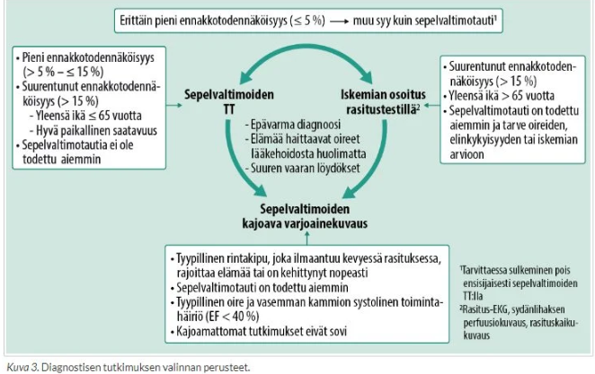
3.1.11 Potilaalla on stabiili rintakipuoire ja sepelvaltimotaudin ennakkotodennäköisyys on keskisuuri. Milloin rasituskuvantaminen EI ole perusteltua selvittelyissä?
- Diagnoosi on epävarma rasitus-EKG:n jälkeen
- Iskemian tulkinta EKG:n perusteella ei onnistu
- Dynaaminen rasituskoe ei onnistu (<80% maksimysykkeestä)
- CCS3 tasoisessa oirekuvassa lisäksi lepokipuja
dJos potilaalla on lepokipuja, kyseessä ei ole enää stabiili sepelvaltimotauti, vaan tilanne on muuttunut epästabiiliksi angina pectorikseksi (UAP). Tällöin kyseessä on akuutimpi tilanne, jossa rasituskuvantaminen (kuten sydämen rasitus-ultraääni tai perfuusiokuvaus) on paitsi turhaa, myös vaarallista (rasituskokeen tekeminen potilaalle, jolla on lepokipuja, voi laukaista infarktin). Tällainen potilas tarvitsee kiireellistä hoitoa, joka etenee suoraan sepelvaltimoiden varjoainekuvaukseen (angiografiaan), ei rauhalliseen rasituskuvantamiseen.
*CCS3 viittaa CCS-luokitukseen eli Canadian Cardiovascular Societyn luokituksen mukaiseen sepelvaltimotaudin oireiden vaikeusasteeseen (kts. alla kuva).
a: Jos rasitus-EKG on epäselvä, tarvitaan tarkempi kuvantamismenetelmä, joka pystyy varmistamaan iskemian olemassaolon ja sijainnin.
b: EKG:n tulkinta on usein erittäin vaikeaa; esim. jos potilaalla on vasen haarakatkos (LBBB), kammioiden tahdistusrytmi tai digoksiinilääkitys. Näissä tilanteissa rasituskuvantaminen on usein tarvittava tutkimus.
c: Jos potilas ei fyysisen suorituskyvyn, nivelvaivojen tai muun syyn vuoksi pääse riittävään rasitustasoon, rasitus-EKG ei ole diagnostinen (ei voi tietää, johtuuko oireettomuus sairauden puutteesta vai siitä, ettei sydäntä rasitettu tarpeeksi). Tällöin voidaan käyttää farmakologista rasitusta (esim. dobutamiinirasitus) kuvantamisen yhteydessä, jolloin sydämen maksimirasitus saavutetaan lääkkeellisesti.
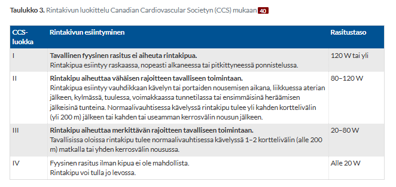
3.1.12 Mikä ei pidä paikkanssa nitraattihoidon mekanismeissa angina pectoriksen hoidossa?
- Lisää laskimopaluuta
- Laajentaa sepelvaltimoita
- Alentaa jälkikuormitusta
- Alentaa vasemman kammion loppudiastolista painetta
aOrgaaniset nitraatit metaboloidaan ja ne vapauttavat typpioksidia, joka lisää verisuonien sileän lihaksen sisällä cGMP:n tasoja (stimuloi guanylyylisyklaasia, joka konvertoi GTP -> cGMP). Lisääntynyt cGMP aiheuttaa myosiinin kevyen ketjun defosforylaatiota, mikä estää sen interaktiota aktiinin kanssa.
Tämä johtaa vasodilataatioon erityisesti laskimopuolella, mutta myös valtimopuolellakin.
b: Nitraatit laajentavat erityisesti vielä avoimia sepelvaltimoita ja parantavat verenvirtausta myös kollateraalisuonten kautta. Tämä auttaa lisäämään hapettuneen veren saantia sydänlihakseen
c: Nitraatit aiheuttavat myös valtimoiden laajenemista (tosin vähemmän kuin laskimoiden), mikä laskee systeemistä verenpainetta. Tämä vähentää jälkikuormitusta (afterload) eli vastusta, jota vastaan sydän joutuu pumppaamaan. Tämäkin vähentää sydämen hapenkulutusta ja lievittää oireita.
d: Koska laskimodilataatio heikentää laskimopaluuta, esikuormitus vähenee ja sydämen vasempaan kammioon kohdistuva täyttöpaine (loppudiastolinen paine) laskee. Tämä vähentää vasemman kammion seinämään kohdistuvaa stressiä ja vähentää myokardiaalista happivaatimusta -> lievittää angina-oireistoa.
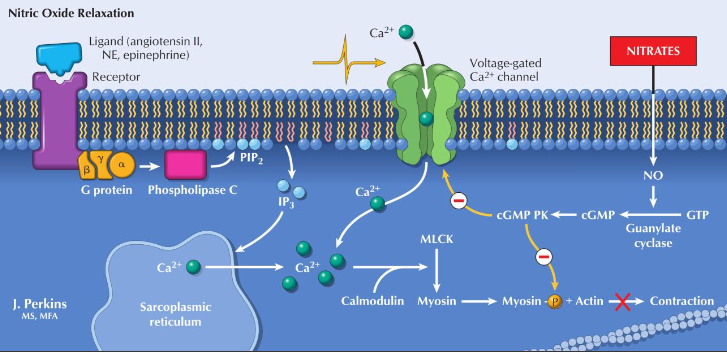
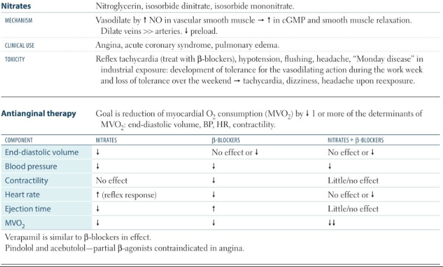
3.1.13 Sydämen vajaatoimintapotilas todennäköisesti hyötyy vajaatoimintatahdistimesta kun:
- EF > 35%
- On RBBB ja QRS kesto on 140ms
- On LBBB ja QRS kesto yli 140ms
- Potilaalla on flimmeri
cVajaatoimintatahdistin (CRT, resynkronisaatiohoito) palauttaa sydämen kammioiden samanaikaisen supistuksen silloin, kun vasen haarakatkos (LBBB) on saanut seinämät supistumaan epätahtisesti. Suuret tutkimukset ovat osoittaneet, että CRT-hoito vähentää kuolleisuutta ja sairaalahoitojaksoja NYHA II-IV oireisilla vajaatoimintapotilailla, joiden ejektiofraktio on alle 30–35 % ja EKG:ssa nähdään LBBB, jossa QRS kesto on vähintään 150ms.
Vajaatoimintatahdistin asennetaan kuten tavanomainen hidaslyöntisyystahdistin (eli oikean eteisen ja oikean kammion elektrodit) lukuun ottamatta vasemman kammion elektrodia, joka muista johdoista poiketen tulee epikardiaalitilaan. Vasemman kammion elektrodi viedään sepelpoukaman (sinus coronarius) kautta sydämen ulkopinnalla kulkevaan sepellaskimohaaraan. Optimaalinen paikka on yleensä lateraalinen tai posterolateraalinen haara. Oikeanpuoleinen kammioelektrodi sijoitetaan kammioväliseinään oikean kammion puolelle. Näin tahdistuselektrodit sijoittuvat vasemman kammion vastakkaisille puolille, ja biventrikulaarisella tahdistuksella saavutetaan useimmiten selvä QRS-heilahduksen kaventuminen luontaiseen QRS-heilahdukseen verrattuna.
b: RBBB ei aiheuta samanlaista dyssynkroniaa kuin LBBB ja vasen puoli sydämestä kontraktoituu suhteellisen normaalisti -> resynkronaatiohoidosta ei ole hyötyä. LBBB taas viivästyttää sydämen taka- ja sivuosien sähköistä aktivoitumista ja supistumista aiheuttaen vasemman kammion seinämien epätahtisen liikkeen eli dyssynkronian. Tämä heikentää vasemman kammion supistumista sekä diastolista täyttymistä ja yleensä myös lisää mitraaliläpän vuodon määrää. Vasen haarakatkos heikentää terveen sydämen iskutilavuutta jopa 40 %:lla. Vajaatoimintaisessa sydämessä dyssynkronian aiheuttama haitta voi olla vieläkin merkittävämpi.
d: Eteisvärinä (flimmeri) ei ole itsessään indikaatio vajaatoimintatahdistimelle. Itse asiassa eteisvärinä tekee CRT-hoidon hyödystä epävarmempaa, koska tahdistimen pitäisi pystyä tahdistamaan molempia kammioita lähes 100 % ajasta (biventrikulaarinen tahdistus). Flimmerissä kammiovaste on epäsäännöllinen, ja CRT-hoidon teho heikkenee. Kuitenkin myös pysyvää eteisvärinää sairastaville suositellaan vajaatoimintatahdistusta, kun vajaatoimintaoireet ovat vaikeat (NYHA III–IV) ja muut edellä mainitut kriteerit täyttyvät. Oma kilpaileva eteis-kammiojohtuminen estää varsin usein jatkuvaan tahdistukseen pääsyn, jolloin tarvitaan eteis-kammiosolmukkeen katkaisu katetriablaatiolla, jotta hoidosta saadaan täysi hyöty.
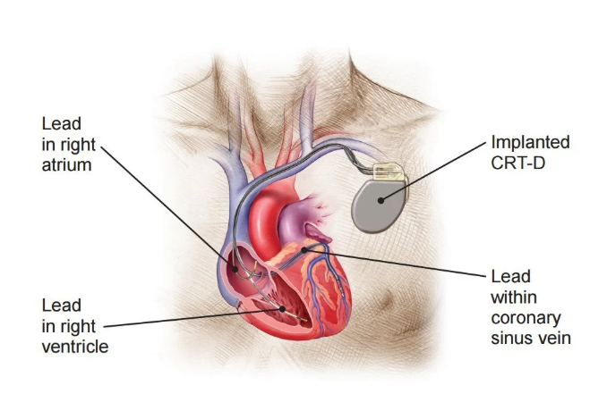
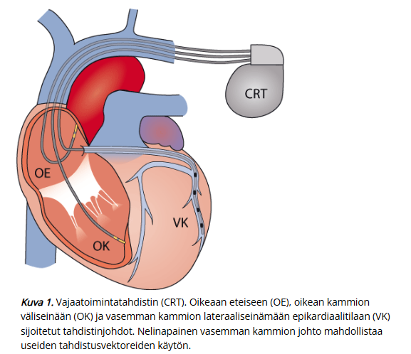
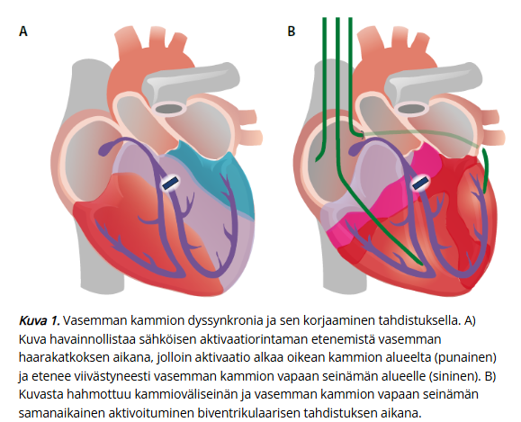
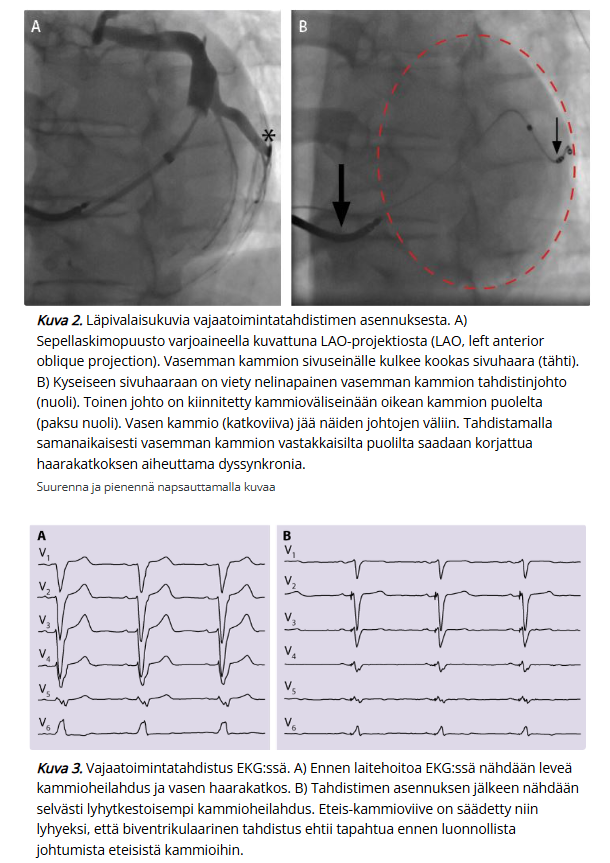
3.1.14 Digoksiini, mikä on oikein?
- Munuaisten toiminta vaikuttaa keskeisesti digitaliksen eliminaatioon
- Hyperkalemia altistaa ja hypokalemia suojaa digitalistoksisuudelta
- Digoksiinin terapeuttisen pitoisuuden yläraja on n. 1.1 mikromoolia/L
- Muuttaessa digoksiiniannosta saavutetaan vakaa tila sen pitoisuudessa n. 2 vuorokaudessa
aDigoksiini on sydänglykosidi, joka vaikuttaa inhiboimalla Na+/K+-ATPaasi-pumppua. Tämä johtaa intrasellulaarisen natriumin konsentraation nousuun, mikä taas vähentää Na+/Ca2+ (NCX) -vaihtajan aktiviteettia ja johtaa intrasellulaarisen Ca2+ konsentraation nousuun. Tämä aiheuttaa lisääntynyttä sydänlihaksen kontraktiliteettia johtuen lisääntyneistä sarkoplasmisista Ca2+-varastoista.
Digoksiini myös stimuloi vagushermoa ja siten hidastaa AV-solmuketta -> sykettä hidastava vaikutus.
Digoksiinin tärkein eliminaatioreitti on muuttumattoman lääkkeen eliminaatio munuaisteitse. Digoksiinin terminaalinen eliminaation puoliintumisaika on pidentynyt munuaisten vajaatoimintapotilailla ja saattaa olla anuriapotilailla noin 100 tuntia.
b: Hypokalemia tekee sydänlihassoluista herkempiä digoksiinin vaikutukselle, koska kaliumin puute vähentää kilpailua sitoutumispaikoista. Siten hypokalemia altistaa vakaville rytmihäiriöille ja toksisuudelle. Hyperkalemia taas voi sinänsä kyllä suojata toksisilta vaikutuksilta, mutta kannattaa myistaa, että digoksiinin oma haittavaikutus on hyperkalemia (estää kaliumin sitoutumista pumppuun ja siirtymistä myokardiumsolujen sisälle -> solunulkoinen hyperkalemia). Äkillinen hyperkalemia on itsessään hengenvaarallinen ja voi olla merkki massiivisesta digoksiinimyrkytyksestä.
c: Digoksiinin terapeuttinen ikkuna on hyvin kapea. Seerumin digoksiinipitoisuus ilmoitetaan tavanomaisina yksikköinä (ng/ml) tai SI-yksikköinä (nmol/l). Digitalis Investigation Group -ryhmän tutkimuksen useiden jälkianalyysien perusteella optimaalinen digoksiinipitoisuus seerumissa saattaa olla 0,5 ng/ml (0,64 nmol/l) – 1,0 ng/ml (1,28 nmol/l). 1.1 mikromoolia on siis 1100 nmol, joka olisi massiivinen digitalismyrkytys. Digoksiinin toksisuus liittyy yleisemmin jo yli 2 ng/ml digoksiinipitoisuuksiin.
d: Digoksiinin terminaalinen eliminaation puoliintumisaika on 30–40 tuntia potilailla, joiden munuaistoiminta on normaali. Vakaan tilan (steady state) saavuttaminen kestää yleensä noin 4–5 puoliintumisaikaa. Käytännössä digoksiinin pitoisuuden tasaantuminen uuden annoksen jälkeen vie noin viikon (n. 5–7 vuorokautta). Kahdessa vuorokaudessa pitoisuus ei ole vielä täten vakaassa tilassa.
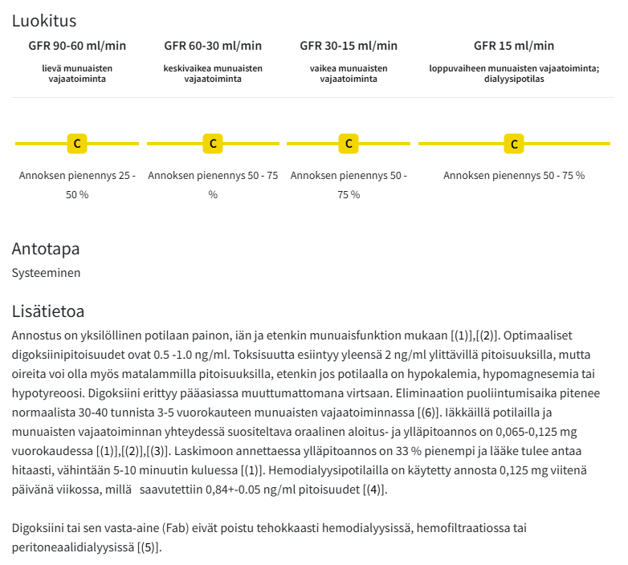
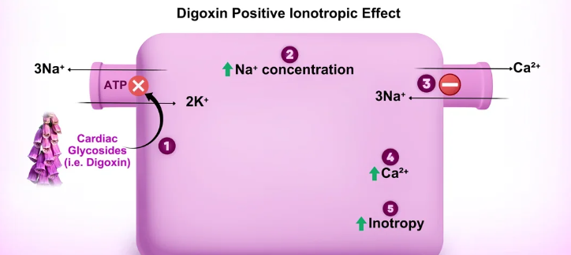
3.1.15 Yleisin leikkaushoitoa vaativa läppävika Suomessa on:
- Aorttaläpän ahtauma
- Aorttaläpän vuoto
- Mitraaliläpän vuoto
- Mitraalistenoosi
aAorttaläpän ahtauma on länsimaissa ja Suomessa selvästi yleisin aikuisten läppävika, joka johtaa kirurgiseen läpänvaihtoon tai katetriteitse tehtävään läpänasennukseen (TAVI). Aorttastenoosin yleisyys korreloi voimakkaasti iän kanssa, sillä tyypillisin syy on läpän hidas degeneratiivinen kalkkeutuminen.
b: Harvinaisempi kuin ahtauma; voi usein ilmentyä ahtaumankin kanssa, mutta puhtaan vuodon vuoksi tehtävät leikkaukset ovat lukumääräisesti paljon harvinaisempia.
c: Toiseksi yleisin leikkaushoitoa vaativa läppävika
d: Nykyään Suomessa harvinainen; pääasiallinen aiheuttaja on ollut lapsuudessa sairastettu reumakuume, mutta näitä ei enää Suomessa juuri synny.3.1.16 Mikä väite oikein?
- Eteisvärinän kammiovastetta pyritään rauhoittamaan alle 60 /min tasolle levossa
- Beetasalpaaja on aiheellinen vaikka leposyke on jo tasolla 40-60/min
- Oireeton nopea (yli 120/min) eteislepatus tai eteisvärinä voi johtaa jatkuessaan sydämen vajaatoimintaan
- Tahdistinhoitoa voidaan käyttää kohtauksittaisten eteisvärinän ehkäisyssä
- jos eteisvärinän kammiovastetta levossa ei saada isolla beetasalpaajan tai verapamiilin annoksella rauhoittumaan alle 75/min, on potilas lähetettävä kardiologille
cTätä ilmiötä kutsutaan nimellä takyardiakardiomyopatia (sykkeen liiallisesta nopeudesta johtuva sydänlihassairaus). Vaikka potilas olisi itse oireeton nopean eteisperäisen rytmihäiriönsä suhteen, sydänlihas joutuu tekemään pitkällä aikavälillä liikaa töitä samalla. Tämä johtaa remodelingiin ja sydämen lokerot alkavat laajentua ja veltostua. Tämä johtaa etenevään sydämen systoliseen vajaatoimintaan, joka onneksi yllättävän usein korjaantuu, kunhan syke saadaan rauhoitettua lääkkeillä.
Ei ole diagnostisia kriteereitä, koska syketasosta, joka vaurioittaa vasenta kammiota, ei ole tarkkaa tietoa.
a: Nykyisten hoitosuositusten mukaan eteisvärinän lääkkeellisessä sykkeenhoidossa riittää yleensä ns. salliva sykekontrolli, jossa leposykkeen tavoite on alle 110 /min (joissain lähteissä 100), kunhan potilas on oireeton. Tiukempaankin kontrolliin (leposyke alle 80/min) voidaan joskus pyrkiä potilaan oireiden mukaan, mutta alle 60/min tasoa ei yleensä tavoitella.
b: Jos potilaalla on jo tällainen lievästi bradykardinen syke, niin beetasalpaajan aloitus on käytännössä vasta-aiheista, sillä se hidastaisi sykettä entisestään ja voisi ajaa potilaan oireiseen bradykardiaan.
d: Tahdistinta käytetään eteisvärinäpotilailla pääsääntöisesti vain silloin, jos eteisvärinäkohtausten välillä (tai niiden aikana) syke laskee liian hitaaksi (esim. sairas sinus -oireyhtymässä tai eteisvärinään liittyvissä pitkissä tauoissa), tai jos nopean flimmerin hoidoksi tehdään AV-solmukkeen ablaatio. Perustahdistin ei estä tai ehkäise eteisvärinäkohtauksia. Eteisvärinän synnyttävät eteisten sähköiset häiriöpesäkkeet (usein keuhkolaskimoiden suilla), joihin tahdistimen antama sähköimpulssi ei vaikuta ehkäisevästi.
e: Syketavoite levossa on alle 110/min. Jos taso on esimerkiksi 80–90/min eikä potilaalla ole oireita, hoito on riittävää perusterveydenhuollossa, eikä potilasta tarvitse lähettää kardiologille vain siksi, ettei päästä alle 75/min tasolle3.1.17 Potilaalla on 20 min kestänyt rintatuntemusoireita, jonka takia hakeutunut ensiapuun. Oireettomana aikana otetussa EKG:ssa ei ole iskeemisiä muutoksia. Tulovaiheen TnT 7 ja 3h kuluttua TnT 27 (norm. yläraja 14). Työdiagnoosi on:
- Stabiili angina pectoris
- Epästabiili angina pectoris
- NSTEMI
- STEMI
cSydänlihasvaurion sydänlihasmerkkiaineet (TnT) tutkitaan ACS-epäilyssä tyypillisesti tulonäytteestä ja tarvittaessa 3 tunnin kuluttua (myös 1 ja 2 tunnin protokollia olemassa). TnT:n nouseminen on positiivinen löydös sydäninfarktille. P-TnT negatiivinen tulos 3 h kuluttua kivun alusta poissulkee sydäninfarktin.
Tietysti, jos olisi selkeä ST-nousu EKG:ssa, niin kyseessä olisi STEMI (ST-elevation Myocardial Infarction) ja ei otettaisi 3h:n TnT-arvoja, vaan potilas kuuluisi nopeaan reperfuusiohoitoon.
a: Stabiili angina pectoris ei aiheuta TNT:n nousua eikä näin pitkäkestoisia rintatuntemusoireita
b: NSTEMI (Non-ST-elevation Myocardial Infarction) erotetaan epästabiilista angina pectoriksesta (UAP) troponiinitestillä
d: STEMI erotetaan NSTEMISTÄ EKG:n perusteella (onko ST-nousua vai ei)
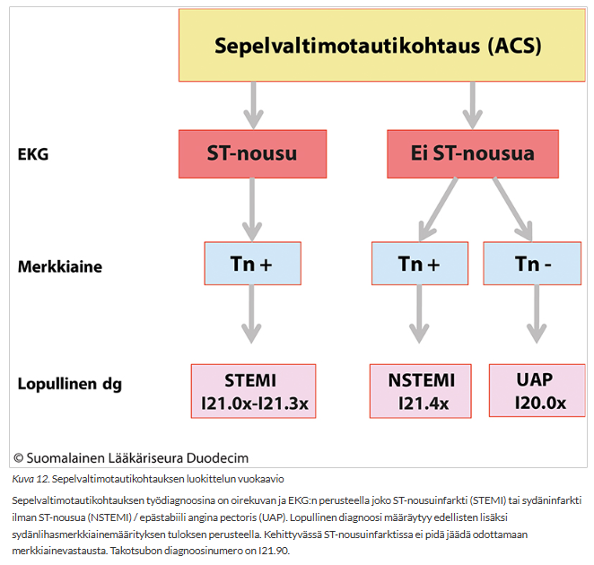
3.1.18 Mikä lääke lisää akuutin sepelvaltimotauti-tapahtumia sydäninfarktin jälkeen?
- Parasetamoli
- Ibuprofeiini
- Tikagrelori
- Atorvastatiini
bNSAIDit (niin epäselektiiviset kuin selektiiviset COX-2-estäjät eli koksibit) lisäävät tutkitusti uuden sydäninfarktin ja tromboottisten tapahtumien riskiä.
Infarktin jälkeen potilaalla on usein käytössään asetyylisalisyylihappo (ASA) estämässä verihiutaleiden takertumista. Ibuprofeiini kilpailee ASAn kanssa samasta sitoutumispaikasta verihiutaleen COX-1-entsyymissä, jolloin se heikentää ASAn suojaavaa, verta ohentavaa vaikutusta. Lisäksi tulehduskipulääkkeet nostavat verenpainetta ja aiheuttavat nestelastia, mikä kuormittaa toipuvaa sydänlihasta.
a: Ensisijainen kipulääke on parasetamoli. Parasetamoli ei vaikuta merkittävästi verihiutaleiden toimintaan eikä COX-1/COX-2-entsyymeihin perifeerisesti.
c: Tikagrelori on tehokas verihiutaleiden estäjä (P2Y12-salpaaja, ADP-reseptorin salpaaja), jota käytetään nimenomaan ehkäisemään uusia akuutteja sepelvaltimotautitapahtumia ja stenttitukoksia sydäninfarktin jälkeen osana kaksoisverihiutale-estohoitoa (DAPT). Aspiriini jatkuu yleensä pysyvänä ja ADP-reseptorin salpaaja jatkuu 12kk (6kk jos vuotovaara on suurentunut tai 12-36kk jos iskemian riski on suuri ilman lisääntynyttä vuotovaaraa).
ADP-salpaajaa käytetään myös akuutin sepelvaltimo-oireyhtymän hoidossa ennen reperfuusiota. Yleensä annetaan aspiriinia 250mg loudaus, mutta ADP:n salpaajan lataaminen ennen PCI:tä toteutetaan paikallisten tapojen mukaan eri tavoilla; joissain paikoissa ADPr-salpaaja annostellaan useimmiten vasta angiosalissa, kun taas joissain kaikki (ASA (250 pureskellen)+ADP-reseptorin salpaaja+enoksapariini (30 iv)) annetaan ennen angiosalia.
d: Atorvastatiini on korkeatehoinen statiini. Infarktin jälkeen se on todella tärkeä lääke, joka paitsi laskee LDL-kolesterolia (tavoite <1.4 mmol/l infarktipotilailla), myös stabiloi sepelvaltimoiden ateroskleroottisia plakkeja ja vähentää verisuonitulehdusta (usein aloitetaankin jo 1 vuorokauden sisällä infarktista tai joskus jopa ennen PCI:tä). Se vähentää merkittävästi uuden infarktin ja kuoleman riskiä.3.1.19 Kenelle hypetoonikolle kirjoitat beetasalpaajaa jos hän sairastaa myös
- Astmaa
- Diabetesta
- Koronaaritautia
- Katkokävelyä
cBeetasalpaajat ovat kroonisen sepelvaltimotaudin oirehoidossa ensisijaisia lääkkeitä. Ne hidastavat sydämen sykettä ja keventävät sydänlihaksen supistusvoimaa, mikä vähentää suoraan sydämen hapenkulutusta ja ehkäisee rintakipukohtauksia (angina pectoris). Kun potilaalla on sekä hypertensio että koronaaritauti, beetasalpaaja hoitaa yhdellä lääkkeellä molemmat.
a: Beetasalpaajat voivat salpaamalla keuhkoputkien beta2-reseptoreita aiheuttaa sileän lihaksen supistumista pahentaa astmaa. Siksi beetasalpaajia vältetään astmapotilailla, ja hypertension ensilinjan hoidoksi valitaan mieluummin muita verenpainelääkkeitä (esim. ATR-salpaaja tai kalsiumkanavansalpaaja tai diureetti).
b: Beetasalpaajat voivat peittää hypoglykemian adrenergiset varoitusoireet, kuten sydämentykytyksen, tärinän ja ahdistuneisuuden, koska lääke estää näitä sympatikuston reaktioita. Lisäksi perinteiset beetasalpaajat voivat heikentää kudosten insuliiniherkkyyttä. Diabeetikon verenpaineen hoidossa ensisijaisia ovat yleensä munuaisia suojaavat ACE-estäjät tai ATR-salpaajat.
d: Katkokävely on merkki alaraajojen tukkivasta valtimotaudista eli ASO-taudista (tai spinaalistenoosistakin; pitää osata erottaa neurogeeninen ja vaskulaarinen klaudikaatio). Joskus on ajateltu, että perinteiset beetasalpaajat voivat aiheuttaa beetareseptorien salpaamisen kautta vastapainotonta alfa-reseptorien toimintaa ja siten perifeeristä vasokonstriktiota jo kompromisoiduissa alaraajoissa, mikä voisi pahentaa alaraajojen iskemiaa. Tätä ei kuitenkaan ole osoitettu uusissa tutkimuksissa ja beetasalpaajat ovat yleensä turvallisia ASO-potilaillakin; varsinkin vasodilatoiva nebivololi. Beetasalpaajat eivät kuitenkaan ole mitään ensilinjan “kaksi lintua yhdellä kivellä”-tyyppisiä lääkkeitä ASO-potilailla ja niitä vieläkin vältetään ainakin kriittisessä iskemiassa (lepokipuja), koska paineiden lasku voi heikentää verenvirtausta entisestään. Perifeerisessä valtimotaudissa yleensä suositaan erityisesti ACE:n estäjiä/ATR:n salpaajia.

3.1.20 Munuaisen parenkyymivikaan hypertension aiheuttajana viittaavat
- Nopeasti paheneva hypertensio
- Proteinuria ja hematuria
- Voimakkaat turvotukset
- Suhinan kuuluminen vatsan alueelta
bProteiinin (valkuaisen) ja veren (punasolujen) esiintyminen virtsassa ovat suoria merkkejä munuaiskerästen vauriosta eli parenkyymiviasta (esimerkiksi glomerulonefriitistä tai diabeettisesta nefropatiasta). Kun munuaisen suodatusyksiköt vaurioituvat, ne alkavat vuotaa valkuaisaineita ja punasoluja virtsaan. Samalla munuaisten kyky säädellä suola- ja nestetasapainoa sekä reniini-angiotensiini-aldosteronijärjestelmää (RAAS) häiriintyy, mikä johtaa sekundaarisen hypertension (verenpainetaudin) kehittymiseen.
a: Vaikka parenkyymivika voi aiheuttaa vaikeaa verenpainetautia, äkillisesti ja nopeasti paheneva hypertensio viittaa kliinisesti vahvemmin esim. renovaskulaariseen hypertensioon (kuten munuaisvaltimon ahtautumaan) kuin hitaammin etenevään parenkyymivikaan.
c: Turvotukset (edeemat) liittyvät toki munuaissairauksiin (kuten nefroottiseen oireyhtymään tai vaikeaan munuaisten vajaatoimintaan), mutta ne ovat hyvin epäspesifinen löydös. Voimakkaita turvotuksia aiheuttavat paljon yleisemmin esimerkiksi sydämen vajaatoiminta, maksasairaudet tai alaraajojen laskimoiden vajaatoiminta. Turvotus itsessään ei siis ole luotettava indikaattori munuaisparenkyymin sairaudesta verenpaineen taustalla.
d: Vatsalta tai kyljestä stetoskoopilla kuuluva systolinen tai jatkuva suhina (bruit) on klassinen merkki munuaisvaltimon ahtautumasta (renovaskulaarisesta sairaudesta), ei munuaisen parenkyymiviasta. Suhina syntyy, kun veri virtaa turbulenttisesti ahtautuneen suonen läpi.3.1.21 Mikä väittämä on oikein?
- Vihannesten säännöllistä runsasta käyttöä tulee välttää varfariinihoidon aikana
- Jos varfariinilla ei saavuta hyvää hoitotasapainoa (TTR50%) kannattaa yleensä harkita siirtymistä suoriin antikoagulantteihin
- Varfariini ei lisää aivoverenvuotovaaraa jos INR taso pysyy koko ajan hoitoalueella 2-3
- Iäkkään eteisvärinäpotilaan hoitotasolla oleva varfariinilääkitys kannattaa taottaa pariksi päiväksi ennen pieniäkin leikkaustoimenpiteitä suurentuneen vuotovaaran takia
- Suorat antikoagulantit ovat hyvä vaihtoehto varfariinille, jos huonon hoitotasapainon syynä on epäsäännöllinen lääkkeiden käyttö
bTTR (Time in Therapeutic Range) kuvaa sitä, kuinka suuren osan ajasta potilaan INR-arvo pysyy tavoitealueella (yleensä 2.0–3.0). Hyvän hoitotasapainon rajana pidetään yleensä yli 70-80 % TTR-arvoa. Jos TTR on vain 50 %, potilas on puolet ajasta joko aliannosteltu (trombiriski) tai yliannosteltu (vuotoriski). Tällaisessa tilanteessa nykyiset hoitosuositukset suosittelevat vahvasti siirtymistä suoriin antikoagulantteihin (DOAC), koska ne tarjoavat tasaisen ja ennustettavan suojan ilman tarvetta jatkuville verikoeseurannoille. Varfariini-NOAC-vaihdoille on yleensä erilliset ohjeet, jotka vaihtelevat hieman lähteiden välillä (alla kaksi erillistä ohjetta kuvina).
a: Vihanneksia ei tarvitse välttää, mutta tärkeintä varfariinihoidossa on K-vitamiinin saannin tasaisuus. Varfariini siis toimii siten, että se estää K-vitamiinin epoksidaasireduktaasia ja siten estää K-vitamiinin aktivaatiota. Aktivoitua K-vitamiinia taas tarvitaan tiettyjen hyytymistekijöiden synteesiin (II, VII, IX, X, proteiini C ja S). Hyytymistekijöiden synteesiä estämällä se siten tuottaa antikoagulatiiviset vaikutuksensa.
K-vitamiinia saa parhaiten tummanvihreistä lehtikasviksista, kuten kaaleista, pinaatista ja parsakaalista. On myös runsaasti esim. rypsiöljyssä. Eläinperäisistä tuotteista K-vitamiinia saa yleensä hieman vähemmän, mutta varsinkin maksassa ja munissa on K-vitamiinia. K-vitamiinia sisältävien ruokien säännöllinen ja runsas käyttö on täysin sallittua, kunhan se on päivittäistä ja määrällisesti vakioitua, jolloin varfariiniannos säädetään sen mukaisesti. Ongelmia ja INR-arvon heittelyä aiheuttavat vain äkilliset ja suuret muutokset ruokavaliossa (esimerkiksi pelkkään salaattiin siirtyminen laihdutuskuurilla tai vihannesten syönnin täydellinen lopettaminen).
c: Varfariini (ja kaikki muutkin antikoagulantit) lisää aina jonkin verran vakavien vuotojen, kuten aivoverenvuodon, riskiä – myös silloin, kun INR pysyy täydellisesti hoitoalueella. Optimaalinen ja tasainen INR-taso pitää tämän riskin mahdollisimman pienenä, mutta ei poista sitä kokonaan. Uudemmilla antikoagulanteilla eli NOACeilla (esim. adoksabaani, epiksabaani, rivaroksabaani, dabigatraani) on merkittävästi pienempi aivoverenvuotoriski niiden säännöllisemmän vaikutusprofiilin takia.
d: Nykyisen hoitokäytännön mukaan pienet toimenpiteet (kuten useimmat hammaslääkäritoimenpiteet, kaihileikkaukset tai pienet ihobiopsiat) suositellaan tehtäväksi ilman varfariinihoidon tauotusta, jos INR ei ole hoitotasoa (tyypillisesti 2-3) merkittävästi suurempi. Paikallista verenvuotoa voidaan toimenpiteessä hallita yleensä riittävästi ihan vain mekaanisesti aluetta painamalla.
e: Huono hoitomyöntyvyys on merkittävä ongelma molemmilla lääkemuodoilla; joissain lähteissä varfariinin ajatellaan olevan jopa parempi epäsäännöllisessä annostelussa sen pidemmän puoliintumisajan takia.
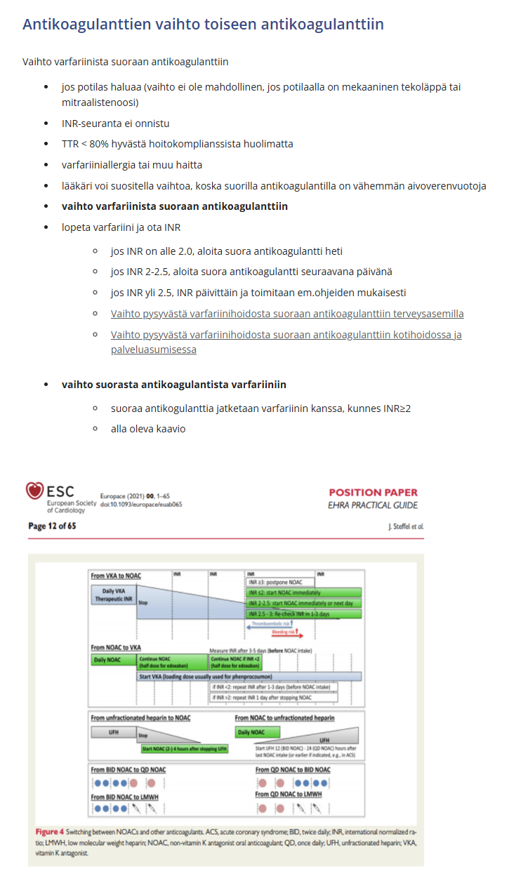
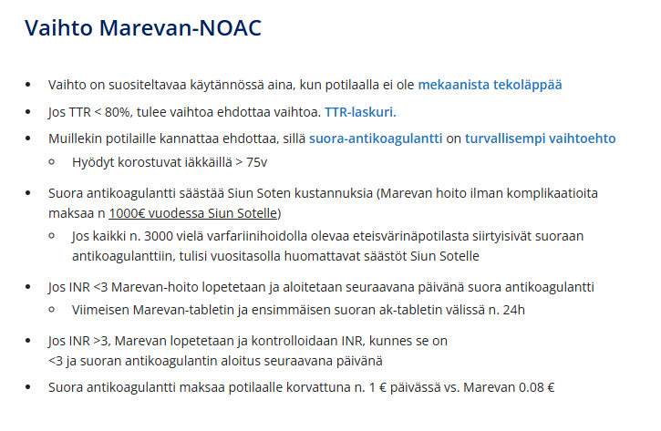
3.1.22 Mikä väittämä on oikein
- Persistoiva eteisvärinä kannattaa yleensä kääntää sinusrytmiin jos kääntö on mahdollinen
- Pelkkä kammiovasteen hallitseminen on ennusteen kannalta huonompi vaihtoehto kuin sinusrytmiin tähtäävä hoito n. 70 vuotiaalla terveellä eteisvärinä potilaalla
- Aspiriinia ei tarvita vakaata sepelvaltimotautia sairastavalla eteisvärinäpotilaalla varfariinilääkityksen ohella
- Fleikainidi sopii eteisvärinäpotilaan hoitoon myös sydäninfarktin jälkeen
- Digoksiini on iäkkään eteisvärinäpotilaan sykkeenhallinnan peruslääke, johon lisätään tarvittaessa muita lääkkeitä
cJos potilaalla on vakaa sepelvaltimotauti (eikä hänelle ole esimerkiksi asennettu stenttiä edeltävän vuoden aikana) ja hän sairastaa eteisvärinää, pelkkä antikoagulaatio (yleensä nykyään suora antikoagulantt, mutta läppäperäisessä eteisvärinässä varfariini) riittää yksinään. Antikoagulantti suojaa sekä eteisvärinän aiheuttamalta aivoinfarktilta että sepelvaltimotautitapahtumilta. Aspiriinin (ASA) lisääminen tähän rinnalle ei vähennä sydäninfarkteja tai kuolemia, mutta se lisää vaarallisten vuotojen, kuten vakavien mahasuolikanavan vuotojen ja aivoverenvuotojen, riskiä. Siksi yhdistelmähoitoa vältetään vakaassa vaiheessa. Poikkeuksia ovat potilaat, joilla on mekaaninen mitraalitekoläppä (pysyvä yhteiskäyttö) tai sepelvaltimoiden pallolaajennuksen jälkitila (väliaikainen yhteiskäyttö).
a: Rytminkäännöstä ei tehdä automaattisesti vain siksi, että se on mahdollista. Jos potilas on iäkäs, vähäoireinen tai oireeton ja eteisvärinä on persistoiva (jatkuva eli kesto >7vrk), pelkkä sykkeenhallinta on yleensä täysin riittävä ja usein ensisijainen hoitolinja. Ei ole yksiselitteistä, milloin valitaan sykkeenhallinta ja hyväksytään eteisvärinä ja milloin yritetään pysyä sinusrytmissä toistuvillakin rytminsiirroilla. Voi kuitenkin yleisesti ajatella, että vähäoireiset ja iäkkäät monisairaat (iäkäs tarkoittaa >65v ja lieväoireinen = EHRA 1-2) voi pitää eteisvärinässä, kunhan vain AK-hoidosta ja järkevästä kammiovasteesta huolehditaan. Rytminkäännökseen ryhdytään yleensä silloin, kun potilas jää sykkeenhallinnasta huolimatta selvästi oireiseksi tai jos kyseessä on nuori potilas, jolla rytmihäiriö kuormittaa sydäntä.
b: Jos päädytään pysyvään eteisvärinään ja sykkeenhallintaan, potilaalle on hyvä kertoa hoitomyöntyvyyden parantamiseksi, että ennuste on lieväoireisilla potilailla (EHRA 1–2) sykkeenhallinnan aikana yhtä hyvä kuin lääkkeellisen rytminhallinnan aikana. Elimistö yleensä tottuu pysyvään eteisvärinään syketaajuuden optimoinnin myötä (“taloudellinen flimmeri”). Suuret kliiniset monikeskustutkimukset (kuten AFFIRM-tutkimus) ovat osoittaneet, että iäkkäämmillä ja muuten hyväkuntoisilla potilailla pelkkä kammiovasteen hallitseminen (sykekontrolli) tarjoaa yhtä hyvän ennusteen (kuolleisuus ja aivoinfarktiriski ovat samat) kuin aggressiivinen sinusrytmiin pyrkiminen (rytmikontrolli estolääkityksellä ja toistuvilla kännöillä).
d: Flekainidi on IC -ryhmän rytmihäiriölääke, joka on ehdottomasti vasta-aiheinen potilailla, joilla on rakenteellinen sydänsairaus, kuten sairastettu sydäninfarkti tai sydämen vajaatoiminta. Infarktin jälkeen nämä lääkkeet lisäävät proarytmistä alttiutta ja voivat laukaista hengenvaarallisia kammiovärinöitä lisäten kuolleisuutta.
e: Digoksiini ei ole enää ensilinjan peruslääke monesta syystä. Ensilinjan lääkkeitä sykkeenhallinnassa eteisvärinäpotilailla ovat yleensä nykyään beetasalpaajat, koska ne ovat terapeuttiselta ikkunaltaan leveämpiä ja ne ovat tehokkaampia erityisesti sympatikustonuksen noustessa. Digoksiini siis rauhoittaa sykettä tehokkaasti vain levossa (vagus-välitteisesti), mutta sen teho häviää heti, kun potilas liikkuu ja sympaattinen hermosto aktivoituu. Tämän takia fyysisesti aktiivisilla potilailla digoksiini ei ole erityisen hyvä lääke. Digoksiini jätetään yleensä vasta toisen tai kolmanteen linjan lääkkeeksi beetasalpaajan rinnalle, jos pelkällä salpaajalla ei saavuteta riittävää vastetta.
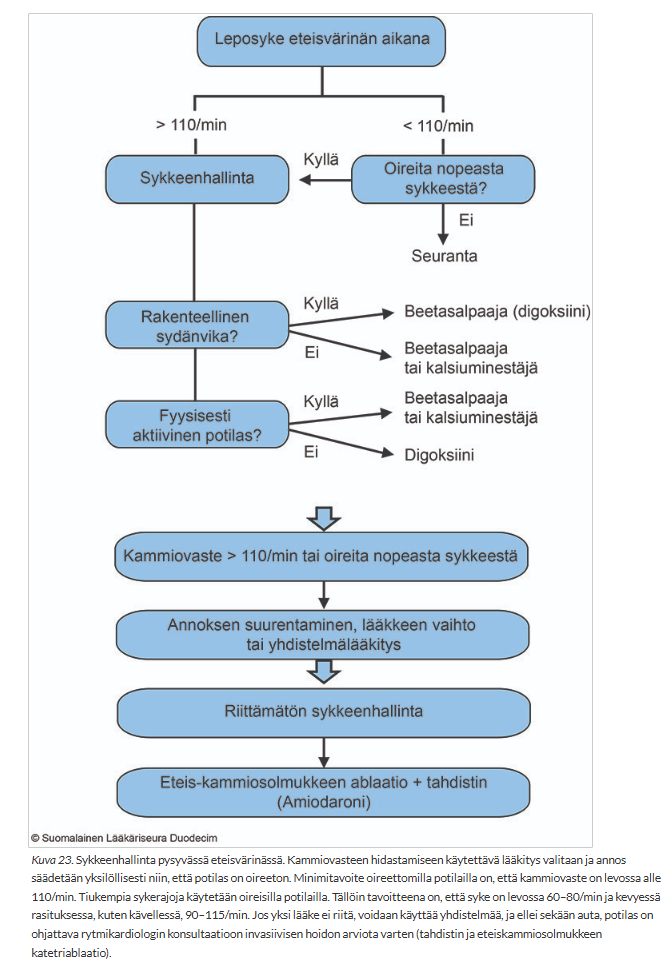
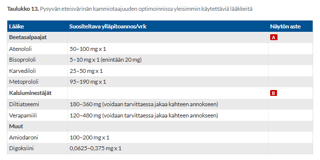
3.1.23 Verenpainelääkitystä suunniteltaessa kannattaa
- Aloittaa yhdellä lääkkeellä ja pikku hiljaa nostaa se maksimiannokseen
- Aloittaa yhdellä lääkkeellä ja sitten vaihtaa toiseen jos ei vastetta
- Aloittaa pienellä annoksella yhdellä lääkkeellä ja lisätä muita verenpainelääkkeitä pienin annoksin
- Aloittaa kunnon annostuksella monella lääkkeellä
cYleinen periaate todella monien sairauksien hoidossa on se, että kahden tai useamman eri tavalla vaikuttavan lääkkeen yhdistäminen pienillä annoksilla on huomattavasti tehokkaampaa ja turvallisempaa kuin yhden lääkkeen annoksen nostaminen huippuunsa. Tämä pätee varsinkin verenpaineeseen, koska sen kohoamisen taustalla on lähes aina useita eri mekanismeja (kuten nestelasti, suonivastus ja sympaattisen hermoston aktiivisuus).
Hypertension Käypä Hoidossa mainitun meta-analyysin perusteella lääkeannoksen 2-kertaistaminen alentaa verenpainetta entisestään 6 mmHg, sepelvaltimotautitapahtumat vähenevät 29 % ja aivohalvaustapahtumat 40 %. 2 lääkkeen yhdistelmä (standardiannoksin) alentaisi entisestään verenpainetta 9 mmHg, sepelvaltimotapahtumat vähenisivät 40 % ja aivohalvaustapahtumat 54 %. Lääkeannoksen tuplaaminen myös johtaa helpommin haittavaikutuksiin kuin pieniannoksisest yhdistelmälääkitykset.
d: Verenpaineen lääkehoito kannattaa yleensä aloittaa suoraan yhdistelmähoidolla, jos verenpaine on >160/100 (eli kotimittauksissa >145/90) eli kohtalaisesti kohonnut (20/10mmHg yli perustavoitteen). Ei siis aina tarvita heti yhdistelmälääkitystä “kunnon annoksella”.
3.1.24 Mikä seuraavista EI pahenna sydämen vajaatoimintaa
- Tulehduskipulääke
- Influenssa
- Kalkkisalpaajalääkitys
- Vähäisten nesteiden nauttiminen
dSydämen vajaatoiminnassa elimistöön pyrkii kertymään liikaa nestettä ja suolaa, mikä johtaa hengenahdistukseen (nestettä kertyy keuhkoihin) ja perifeerisiin turvotuksiin. Siksi vajaatoimintapotilailla usein tarvitaan nesteenrajoitusta (usein max 1,5–2 litraa vuorokaudessa) sekä nesteenpoistolääkkeitä (diureetit). Vähäinen nesteiden nauttiminen auttaa pitämään nestetasapainon hallinnassa eikä pahenna tautia, kun taas liiallinen nesteen juominen voi laukaista akuutin vajaatoiminnan pahenemisvaiheen.
Nesterajoituksen hyödyistä ei kuitenkaan ole yksiselitteistä tutkimusnäyttöä. Käynnissä oleva FRESH-UP-tutkimus on ensimmäinen satunnaistettu monikeskustutkimus, jossa selvitetään kolmen kuukauden mittaisen nesterajoituksen (1 500 ml/vrk) vaikutusta NYHA II–III -vajaatoimintapotilaiden elämänlaatuun ja potilasturvallisuuteen (kuolema, sairaalahoidot).
Kuitenkin vieläkin suositellaan nesteen saantia rajoitettavan maltillisesti (1,5–2 litraa/vrk) ainakin turvotuksiin taipuvaisen (vaikea taudinkuva) potilaan ja NYHA III-IV-luokan hoidossa. Nestehukkaa aiheuttavissa tiloissa (kuume, ripulointi) tulee kuitenkin huolehtia riittävästä nesteen saannista.
Oleellista on maltillinen nesteiden käyttö. Erittäin runsas nesteen nauttiminen on selvästi haitallista, mutta toisaalta diureettien käyttäjien on muistettava riittävä nesteen nauttiminen etenkin helleaikana. Joskus diureetit lisäävät janon tunnetta ja siten myös juomista, joten potilaan nauttimaa nestemäärää on hyvä seurata.
a: Tulehduskipulääkkeet (NSAIDit) vähentävät munuaisglomeruluksissa afferentin arteriolin dilataatiota (estävät prostaglandiinien synteesiä). Tämä johtaa GFR:n laskuun ja suolan ja nesteen kertymiseen elimistöön -> nestelasti. NSAIDit myös lisäävät usein verenpainetta johtuen muiden alueiden prostaglandiinisynteesin estosta -> nestelasti ja kohonnut vastus voivat pahentaa sydämen vajaatoimintaa nopeasti.
b: Kaikki rajut infektiot ja kuumetaudit lisäävät elimistön metabolista stressiä ja hapenkulutusta. Kun influenssa nostaa sykettä ja kuumetta, jo valmiiksi heikentynyt sydänlihas ei pysty vastaamaan tähän huimasti kasvaneeseen kuormitukseen, mikä voi johtaa vajaatoiminnan pahenemiseen pettämiseen. (Tämän vuoksi vajaatoimintapotilaille suositellaankin aina vuosittaista influenssarokotetta).
c: Tietyillä kalsiumkanavan salpaajilla (erityisesti non-dihydropyridiinityyppisillä eli diltiatseemilla ja verapamiililla) on negatiivinen inotrooppinen vaikutus eli ne heikentävät sydänlihaksen supistusvoimaa. Jos potilaalla on systolinen vajaatoiminta (heikentynyt pumppausteho), nämä lääkkeet voivat romahduttaa sydämen toiminnan ja ne ovatkin vasta-aiheisia vajaatoimintapotilailla.
Verenpaineen hoidossa käytettävät dihydropyridiiniryhmän kalkkisalpaajat, kuten amlodipiini, ovat verisuonispesifisempiä eivätkä yleensä heikennä sydämen supistuvuutta; ne kuitenkin usein aiheuttavat nilkkojen turvotusta vasodilataatiosta johtuen, joka on jo muutenkin vajaatoimintapotilailla usein ongelmana esillä. Kalsiumakanavasalpaajista ei myöskään ole mitään ennustehyötyä, joten jos vajaatoimintapotilas tarvitsee verenpainelääkitystä, niin ei ole järkeä käyttää kalsiumkanavasalpaajia, jos ei ole muita verenpainetta alentavia ennustelääkkeitä käytössä (paljon järkevämpää lisätä esim. ACE:n estäjä, koska se parantaa ennutetta samalla, kun se laskee verenpainetta).3.1.25 Mikä seuraavista on välttämätön sydämen vajaatoiminnan diagnoosille?
- Sydämen vajaatoimintaan viittaavat oireet
- Alentunut EF
- Keuhkoista kuuluva rahina auskultoitaessa
- Sepelvaltimotauti
aSydämen vajaatoiminnan diagnoosi vaatii, että potilaalla on:
Tämän takia sydämen vajaatoiminnan vaiheet A ja B (ei oireita) eivät ole virallisesti sydämen vajaatoimintaa vaan subkliinista sydämen vajaatoimintaa
b: Sydämen vajaatoiminta voidaan jakaa kolmeen luokkaan vasemman kammion ejektiofraktion (EF) mukaan: HFrEF (heart failure with reduced ejection fraction = EF 40% tai alle), HFmrEF (heart failure with mildly reduced ejection fraction = EF 41-49%), HFpEF (heart failure with preserved ejection fraction, EF = 50% tai enemmän). Normaali ejektiofraktio on siis n. 50%-70%, joten potilaalla voi hyvinkin olla vajaatoimintaa normaalillakin ejektiofraktiolla - tällöin se vain on HFpEF eli diastolista vajaatoimintaa.
c: Keuhkojen kuuntelulöydöksenä kuuluva hieno rahina voi olla merkki keuhkokongestiosta, mikä voi kyllä viitata sydämen vasemman puolen vajaatoimintaan. Monilla kroonista, hyvässä hoitotasapainossa olevaa vajaatoimintaa sairastavilla potilailla keuhkot ovat lääkityksen (kuten diureettien) ansiosta täysin puhtaat ja kuivat, eikä rahinoita kuulu. Keuhkojen poikkeava auskultaatiolöydös kyllä voi siis olla sydämen vajaatoimintaa tukeva löydös, mutta se ei ole vaadittu diagnoosiin. Rahina voi myös johtua aivan muista syistä, kuten keuhkofibroosista tai keuhkokuumeesta.
d: Sepelvaltimotauti on kylläkin yleinen sydämen vajaatoiminnan taustasyy (iskeeminen sydänsairaus ja vanhat infarktit), mutta se ei ole diagnoosin edellytys. Vajaatoiminnan voi laukaista mikä tahansa muukin sydäntä vaurioittava tekijä, kuten pitkään jatkunut hoitamaton kohonnut verenpaine, sydänlihastulehdus (myokardiitti), läppäviat, synnynnäinen kardiomyopatia tai runsas pitkäaikainen alkoholin käyttö.


3.1.26 Potilaalla on jatkuva rintakipuoire ja EKG:ssa LBBB. Aiempia EKG-nauhoja ei ole saatavilla. Tilannetta hoidetaan kuten
- Korkean riskin NSTEMI
- Korkean riskin UAP
- STEMI
- LBBB:n vuoksi sepelvaltimokohtaus on poissuljettu
cLBBB häiritsee ST-tason muutosten luotettavaa arviointia merkittävästi ja vasen haarakatkos (LBBB) yhdistettynä sydäninfarktin kliiniseen kuvaan viittaa STEMI:iin. Iskemian tulkinta LBBB:ssä ja kammiotahdistinrytmin aikana on vaikeaa, minkä vuoksi arvio kiireellisen revaskularisaation tarpeesta tulee tehdä pääosin oireiden ja hemodynaamisten parametrien perusteella. Pelkän ST-nousun korkeuden spesifisyys on erittäin huono. Vertailu aiempiin EKG-tallenteisiin on erityisen tärkeää.
Nykyään LBBB-potilaan EKG:n arvioinnissa voidaan hyödyntää Smith-Modifoituja Sgarbossa-kriteerejä, jotka ovat LBBB-potilaan akuutin infaktin tunnistamisessa herkkyydeltään n. 80-91% ja tarkkuudeltaan jopa 90-99%. Niiden mukaan jokin seuraavista löydöksistä EKG:ssa viittaa akuuttiin infarktiin LBBB:n yhteydessä:
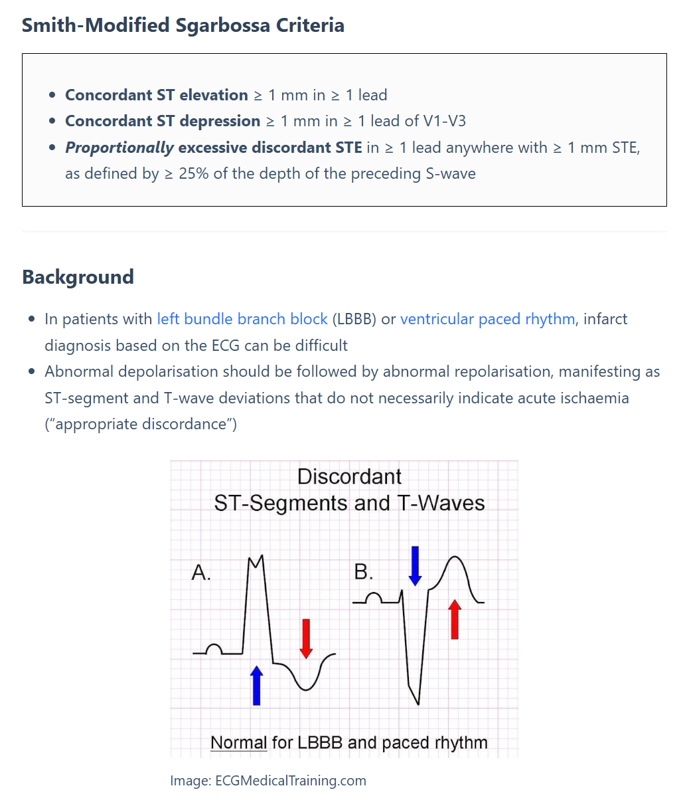
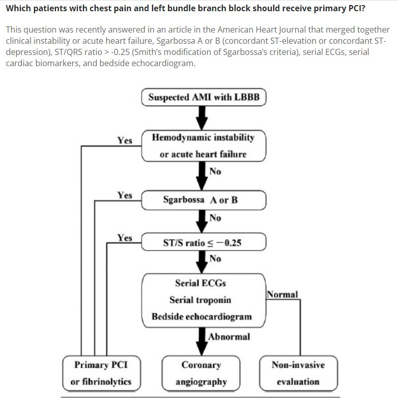
3.1.27 Mikä seuraavista määrittää sepelvaltimotaudin ennakkotodennäköisyyttä stabiilin rintakipuoireen selvittelyssä?
- Rasituskokeen tulos
- Lääkitys
- Kivun luonne
- Sydämen UÄ-tutkimus
cAhtauttavan sepelvaltimotaudin kliininen ennakkotodennäköisyys määritellään useimmiten iän, sukupuolen, oireiden ja riskitekijöiden lukumäärän perusteella. Oirekuva voidaan jakaa kliinisesti kolmeen tyyppiin: tyypilliseen, epätyypilliseen ja muuhun kipuun (kts. luokittelu ja ennakkotodennäköisyystaulukko alla).
a ja d: Jatkotutkimuksia, joita tarvitaan mahdollisesti ennakkotodennäköisyyden arvioimisen jälkeen.
b: Potilaan nykyinen lääkitys voi kyllä kertoa hänen muista perussairauksistaan tai riskitekijöistään (kuten kohonnut verenpaine tai kolesteroli), mutta se ei ole suora muuttuja, jota käytettäisiin ennakkotodennäköisyystaulukossa.
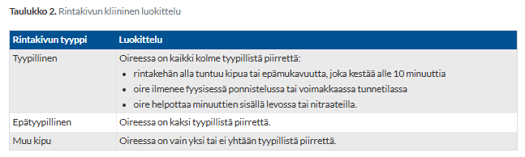

3.1.28 Endokardiitissa
- Oireilu voi olla kestänyt kuukauden ennen diagnoosia
- Oireisto ei voi edetä parissa vuorokaudessa hemodynamiikan romahtamiseen
- Sivuääni kuuluu sydämen auskultaatiossa poikkeuksetta, mikäli auskultaatio on huolellinen ja rauhallisessa ympäristössä
- CRP on aina koholla jos oireisto on kestänyt yli vuorokauden
aEndokardiitti jaetaan kliinisesti usein akuuttiin ja subakuuttiin muotoon. Akuutti kyllä kehittyy nopeasti parissa päivässä, mutta subakuutti kehittyy hitaasi ja voi kestää jopa viikkoja/kuukausia. Akuutin aiheuttaja on tyypillisesti S. aureus, kun taas subakuutin aiheuttaja yleensä matalavirulenttin viridans-ryhmän streptokokki (tyypillisesti suuperäisiä). Subakuutissa taudissa oireet voivat olla pitkäänkin hyvin epämääräisiä: pitkittynyttä lievää kuumeilua, väsymystä, yöhikoilua, ruokahaluttomuutta, painon laskua yms. Koska oireet muistuttavat tavanomaisia virusinfektioita tai jopa maligniteetteja, diagnoosin viivästyminen viikoilla tai kuukausilla on kliinisessä arjessa valitettavan yleistä.
b: Kyllä voi, ja tämä on tyypillistä akuutille endokardiitille, jonka aiheuttajana on usein ärhäkkä Staphylococcus aureus. Tällainen infektio voi esim. tuhota sydänläpän rakenteet aiheuttaen akuutin läppävuodon ja läpän äkillinen pettäminen voi ajaa potilaan kardiogeeniseen shokkiin eli hemodynaamiseen romahdukseen nopeasti.
c: Vaikka uusi tai muuttunut sivuääni on yksi endokardiitin klassisista piirteistä, sellaista ei kuulu poikkeuksetta. Varsinkin sairauden varhaisessa vaiheessa läppämuutokset (vegetaatiot) voivat olla niin pieniä, etteivät ne vielä aiheuta turbulenttia virtausta tai vuotoa johtaen sivuääneen Sivuääni voi puuttua erityisesti silloin, jos kyseessä on oikean puolen endokardiitti (esim. trikuspidaaliläpässä suonensisäisten huumeiden käyttäjillä), jolloin vuotoääni on matalapaineisempi ja huomattavasti vaikeampi kuulla. Kuitenkin jos potilas on kuumeinen ja hänellä todetaan uusi sivuääni, tulisi epäillä infektiivistä endokardiittia.
d: Vaikka valtaosalla potilaista CRP on selvästi kohonnut, endokardiitti voi esim. hyvin hitaasti etenevässä subakuutissa muodossa tai immuunipuutteisella potilaalla esiintyä alussa täysin normaalilla tai vain minimaalisesti kohonneella CRP-arvolla. Diagnoosia ei siis saa sulkea pois pelkän normaalin CRP:n perusteella, jos kliininen epäily on vahva3.1.29 Meningiitin hoitovalinta
- Asikloviiri jos enterovirus-NhO pos.
- Keftriaksoni jos bakt. värjäyksestä ilmoitetaan gram neg diplokokki
- Keftriaksoni jos viljelystä ilmoitetaan listeria
- deksametasoni sekä virus- että bakteerimeningiitissä
bGram-negatiivinen diplokokki on todennäköisesti neisseria meningitidis (meningokokki), joka on yksi yleisimmistä bakteerimeningiitin aiheuttajista nuorilla ja aikuisilla. Sen rinnalla yleisin on streptokokki (Streptococcus pneumonia), joka on grampositiivinen kokki (lansetin muotoinen grampositiivinen diplokokki). Jos taas värjäyksessä olisi grampositiivinen sauva, niin Listeria olisi ensisijainen epäily. Meningokokin hoidossa ensisijainen antibiootti on yleensä keftriaksoni 2g x 2iv. Meningokokkipotilasta on hoidettava pisaraeristyksessä 24 h tehoavan hoidon alusta.
Lähikontakteille annetaan yleensä profylaksia. Ensisijainen meningokokki-profylaksialääke on siprofloksasiini (750mg kerta-annos). Profylaksiaan kuuluu myös rokotus, jos taudin on aiheuttanut kanta A, C, W135 tai Y. 2017 alkaen on ollut käytössä rokote myös B-meningokokkia vastaan; Mikäli samassa taloudessa on vähintään kaksi B seroryhmän meningokokkitapausta, on perusteltua rokottaa muut samassa taloudessa asuvat.
Bakteerimeningiitissä hoidolla on kiire ja se aloitetaan empiirisesti yleensä jo ennen mitään viljelyvastauksia tai edes bakteerivärjäysvastauksia. Antibioottihoito aloitetaan yleensä heti näytteiden oton jälkeen. Tyypillisesti siis otetaan likvor ja 2x veriviljely ja näiden jälkeen heti lääkitys. Usein kuitenkin tulee ottaa TT ennen likvoria, jos on esim. fokaalisia neurologisia oireita ja löydöksiä, kouristelua, vaikea immuunipuutos, pitkittynyt tai uusiutuva kuume, pitkittynyt kooma tai alentunut tajunnantaso tai epäiltäessä kohonnutta kallonsisäistä painetta. Tarkoitus on TT:llä poissulkea rakenteellinen syy kohonneelle kallonsisäiselle paineelle, jolloin ei kannattaisi herniaatioriskin takia ottaa likvoria. Tällaisessa tilanteessa otetaan veriviljelyt ja aloitetaan hoito heti, jonka jälkeen siirretään potilas TT-kuvalle. Hoidon voi myös aloittaa ennen mitään laboratorionäytteitä, jos kuljetusmatka sellaiseen hoitopaikkaan, jossa näytteet voidaan ottaa, on pitkä.
Empiirinen hoito on deksametasoni 0.15 mg/kg (10mg) × 4 i.v. + keftriaksoni 2 g x 2 i.v. + vankomysiini 15 mg/kg (1g) x 2 i.v. (+ ampisilliini 2g x 6 i.v., jos listeriariski).
a: Virusmeningiitin yleisimmät aiheuttajat kyllä ovat enteroviruksia (esim. coxsackie ja echo-virukset), mutta niiden hoidossa ei ole käytössä viruslääkkeitä. Asikloviiria voidaan kylläkin käyttää herpesvirusten (esim. HSV-1:n aiheuttama enkefaliitti tai HSV-2-meningiitti) ja vesirokkoviruksen (VZV) hoitoon.
c: Listeria monocytogenes on poikkeuksellinen bakteeri, sillä se on luonnostaan resistentti kaikille kefalosporiineille, mukaan lukien keftriaksonille. Jos meningiitin aiheuttajaksi varmistuu listeria (tyypillinen iäkkäillä, alkoholisteilla tai immuunipuutteisilla), hoidoksi valitaan ensisijaisesti ampisilliini suonensisäisesti.
d: Deksametasonia annetaan empiirisesti 4 päivän ajan bakteerimeningiitissä. Se aloitetaan ennen ensimmäistä mikrobilääkeannosta tai yhtäaikaisesti mikrobilääkityksen kanssa. Sen tehtävä on hillitä aivojen tulehdustilaa ja laskea aivopainetta (vähän). Käyttö perustuu siihen tietoon, että bakteerien endotoksiinien laukaisema inflammaatio – siis sytokiinimyrsky – on vahingollisempi kuin bakteerit sinänsä. Mikrobilääkkeen nopea annosteleminen hajottaa runsaasti bakteereja pahentaen näin sytokiinimyrskyä. Noin 15-30 minuuttia ennen mikrobilääkettä annettu deksametasoni saattaa jarruttaa tätä inflammaatiokaskadia. Deksametasoni vähentää myös BBB läpäisevyyttä. Se aloitetaan jos bakteerietiologia avoin / epäillään pneumokokkimenigiittiä (ja ikä > 55 v)). Jos aiheuttaja on jokin muu kuin pneumokokki, lopetetaan deksametasoni. Sitä ei siis käytetä virusmeningiiteissä.3.1.30 Bakteeriripulitaudissa
- Fluorokinolonit tehoavat yleensä sekä salmonellaan että kampylobakteeriin
- Jos F-baktNhO on kampylobakteerin suhteen pos ja ripuli edelleen jatkuu, on asitromysiinihoidon aloittaminen järkevä valinta
- Sekä salmonella- että kampylobakteerienteriiti kuumeisessakin taudissa voidaan jättää hoitamatta antibiooteilla
- Pitkäaikaiskantajuus on sairastetun taudin jälkeen ilman ab-hoitoa yleistä sekä salmonelloosissa että kampylobakterioosissa
bJos kampylobakteerigastroenteriitissä etiologian selvittyä oireet ovat helpottaneet tai ne ovat lieviä, ei mikrobilääkitystä yleensä tarvita. Jos potilaan oireet vaativat hoitoa mikrobilääkkeellä, ensisijainen vaihtoehto on makrolidi (esim. atsitromysiini 500 mg × 1 po, hoitoaika 3 vrk). Antibioottihoidon ei kuitenkaan ole osoitettu ehkäisevän harvinaisia jälkitauteja, esimerkiksi reaktiivista artriittia.
a: Ulkomailta tuoduissa kannoissa fluorokinoloniresistenssi on yleistä, varsinkin kampylobakteerilla. Salmonellagastroenteriitissä jos antibioottihoitoa tarvitaan, ensisijainen hoitovaihtoehto on kylläkin siprofloksasiini 500 mg x 2 po 3 vrk ajan (lievää enteriittiä ei pääsääntöisesti ole syytä hoitaa antibiootein).
c: Merkittävän kuumeiset yleissairaudet kyllä yleensä vaativat antibioottihoitoa. Lievä gastroenteriittejä ei tarvitse hoitaa, mutta esim. keskivaikea ja vaikea salmonellaripuli hoidetaan antibiooteilla (esim. jos kuumetta, veriripulia tai potilas tarvitsee sairaalahoitoa).
d: Pitkäaikaiskantajuus (bakteerin erittyminen ulosteeseen pitkään sairastamisesta) on harvinaista. Non-tyfoidaalisen salmonellatartunnan jälkeen noin alle 1 %:lle kehittyy pitkäaikaiskantajuus ja suurin osa S. enteritidis tai S. typhimurium -infektioista loppuuu parissa viikossa. Lavantaudissa (S. typhi) taas riski on hieman korkeampi (n. 2-5%; bakteeri jää sappirakkoon). Kampylobakteeri-infektiossa pitkäaikaiskantajuus on erittäin poikkeuksellista, ja bakteerin eritys loppuu lähes aina muutamassa viikossa.3.1.31 Malarian profylaksia
- On syytä harkita yli 2 viikon matkoille
- Ei riipu maasta, minne on matkustamassa, vaan lääkkeen hinta ja sivuvaikutusasiat ratkaisevat lääkkeen valinnan
- Voi joskus olla doksisykliini
- Lopetetaan suositusten mukaan yleensä 2 viikon kuluttua matkalta palattua
cMalarian estolääkitysvaihtoehdot voi muistaa muistisäännöstä MADventures:
a: Malarian estolääkityksen tarve ei riipu matkan kestosta, vaan matkakohteen malariariskistä. Jos matkustaa korkean riskin malaria-alueelle, estolääkitys on välttämätön, vaikka viipyisi kohteessa vain yhden vuorokauden.
b: Estolääkityssuositukset on syytä tarkistaa maakohtaisista ohjeista, koska suositeltu estolääke riippuu alueen resistenssitilanteesta. Jos ei ole resistenssiä, niin kaikki kolme lääkettä ovat teholtaan yhtä hyviä ja niistä valitaan matkailijalle yksilöllisesti sopivin vaihtoehto. Esimerkiksi meflokiini on vasta-aiheinen potilaille, joilla on/ollut masennusta, muita mielenterveyshäiriöitä (ahdistuneisuushäiriö, psykoosi, skitsofrenia) tai epilepsiakohtauksia.
d: Estolääkityksen kesto riippuu käytettävästä lääkeaineesta:
3.1.32 Mikä väittämä on oikein?
- Pneumoniapotilas kuuluu aina sairaalahoitoon
- Potilaan iällä ei ole merkitystä kun arvioidaan pneumoniapotilaan sairaalahoidon tarvetta
- Sairaalahoitoon on pääasiassa otettava ne potilaat joiden Osat% on alle 90%
- Sairaalahoitoon otetaan äkillisesti korkeakuumeiseksi tullut voimakasoireinen pneumoniapotilas, vaikka tämän CRP olisi normaali
dCRP-pitoisuuden nousu ei tapahdu heti, vaan se vie aikaa. Äkillisesti ja rajusti alkaneessa infektiossa CRP-arvo voi olla vielä täysin normaali 1. vuorokauden aikana, vaikka kyseessä olisikin henkeä uhkaava, vaikeaoireinen bakteerikeuhkokuume. Potilaan kliininen tila, yleisvointi ja elintoiminnot (hengitystiheys, verenpaine, happisaturaatio) ratkaisevat hoidon kiireellisyyden – ei yksittäinen laboratoriotulos.
a: Suurin osa keuhkokuumeista on lieviä, ja sairastuneet voidaan turvallisesti hoitaa kotona, jos lääkitys on mahdollista ottaa suun kautta. Joissain tilanteissa voidaan järjestää esimerkiksi kotisairaalan kautta suonensisäinen mikrobilääkehoito. Keuhkokuumepotilaan hoitopaikan valinnassa voidaan hyödyntää keuhkokuumeen vaikeusastetta kuvaavaa DS-CRB-65-työkalua.
b: Ikä on yksi tärkeimmistä ennustetta määrittävistä tekijöistä ja on myös osa DS-CRB-65-työkalua, jossa ikä yli 65-vuotta antaa yhden riskipisteen ja madaltaa kynnystä ottaa potilas sairaalahoitoon (iän perusteella ei suoraan tarvitse ottaa hoitoon, mutta on merkittävästi vaikuttavat tekijä päätöksessä kylläkin).
c: Otetaan kyllä muitakin potilaita ja vaikka tyypillisessä DS-CRB-65-työkalussa mainitaan happisaturaation suhteen raja-arvoksi 90%, niin 50-vuotiailla ja nuoremmilla happikyllästeisyys ≤ 93 % viittaa vaikeaan taudinkuvaan, koska he pystyvät suuremman hengityskapasiteettinsa ansiosta kompensoimaan keuhkokuumeen aiheuttamia muutoksia vanhempia henkilöitä paremmin.
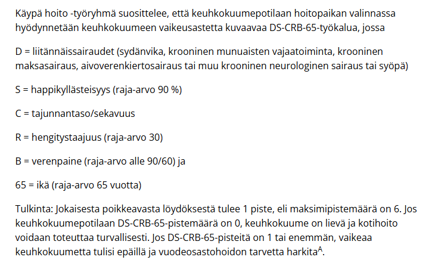
3.1.33 Immunosupressiopotilaalla tarkoitetaan:
- Tutkimukset viittaavat siihen, että on aloitettava immunosupressiolääkitys
- Yleensä vain hematologisia ja onkologisia potilaita
- Laajaa kirjoa potilaita, joilla joko lääkitys/hoito tai perussairaus aiheuttaneet immuunipuolustuskyvyn heikkouden
- Vain neutropeenisiä potilaita
cImmunosuppressio (immuunivasteen heikkous tai lamaantuminen) voi johtua joko hoidosta tai itse sairaudesta. Kyseessä on erittäin monimuotoinen potilasryhmä, johon kuuluvat muun muassa elinsiirtopotilaat (hylkimisenestolääkitys), autoiimmunisairauden/reumasairauksien takia hoidetut (glukokortikoidit, biologiset lääkkeet yms) sekä solunsalpaajahoitoa saavat potilaat. Sairaudesta johtuviin immunosuppresiivisiin tiloihin kuuluu mm. hoitamaton HIV-infektio (AIDS), synnynnäiset immuunipuutokset ja malignit veritaudit.
a: Potilasta pidetään immunosuppressiopotilaana vasta silloin, kun hänen immuunijärjestelmänsä on parhaillaan lääkityksen tai sairauden vuoksi heikentynyt; pelkkä immunosuppressiivisen lääkityksen aloittamisen harkitseminen ei johda immunosuppressiopotilaan statukseen
b: Onkologiset ja hematologiset potilaat ovat kylläkin tärkeä immunosuppressiopotilaiden ryhmä, mutta he eivät ole ainoita immunosuppressiopotilaita.
d: Neutropenia tarkoittaa nimenomaan neutrofiilien matalaa määrää veressä, ja se on yksi immunosuppression muoto. Immunosuppressio voi kuitenkin olla myös esim. lymfosytopeniasta tai lymfosyyttien toimintahäiriöstä johtuvaa ja neutrofiiliarvot voivat olla täysin normaalit.3.1.34 Sepsiksen bedside kriteereissä: (Qsofa)
- Vaaditaan glasgow coma scale arviointi
- Takykardia on yksi pääkriteereistä
- Tajunnantasoa voidaan arvioida skaalalla alentunut/normaali
- Takypnean rajana on Hfr 30/min
cSepsiksen tunnistamisessa käytettävien q-SOFA-kriteerien mukaan sepsistä voidaan epäillä, jos potilaalla on kriteereistä kaksi tai useampi:
a: GCS kyllä kuvaa tajunnan tasoa, mutta qSofassa riittää skaala alentunut/normaali eikä tarkempaa GCS-pisteytystä tarvitse tehdä. GCS on kylläkin osa tarkempaa SOFA-pisteytystä (SOFA = sequental (sepsis-related) organ failure assessment). Sepsiksen määritelmä on, että potilaalla on infektioepäily ja lisäksi vähintään yksi uusi elinhäiriö (SOFAssa vähintään 2 pisteen nousu).
b: Takypnea (kohonnut hengitysfrekvenssi) on kriteeri, mutta takykardiaa ei katsota qSofassa
d: Raja on 22
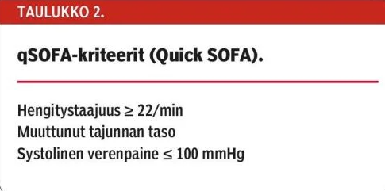
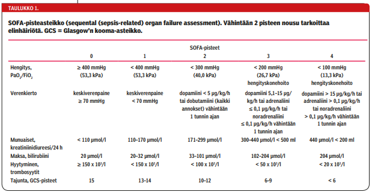
3.1.35 Tuberkuloosin oireet ja niiden löydökset
- Potilaalla on yleensä aina klassiset oireet: kuume, laihtuminen, yöhikoilu
- Keuhkotubiin sopiva keuhkokuvalöydös on ainoastaan keuhkojen kärjen infiltraatti
- Tubipotilaalla on aina löydöksiä keuhkokuvassa, mutta löydös voi olla missä lohkossa tahansa
- Tubipotilas voi olla vähäoireinen ja keuhkokuva normaali
dVaikka keuhkotuberkuloosi on yleisin tuberkuloosi, niin tuberkuloosi ei aina ole keuhkoissa eikä myöskään keuhkotuberkuloosi aina näy keuhkokuvassa. Tauti voi myös olla pitkään hyvinkin lieväoireinen. Samoin latentti tuberkuloosi on käytännössä oireeton.
a: Nämä niin sanotut B-oireet (kuume, laihtuminen, yöhikoilu) ovat tyypillisiä pitkälle edenneelle keuhkotuberkuloosille, mutta ne puuttuvat monilta potilailta taudin varhaisvaiheessa tai jos kyseessä on pelkkä paikallinen keuhkojen ulkopuolinen tuberkuloosi tai latentti tuberkuloosi.
b: Keuhkojen yläosissa sijaitsevat granuloomat, kalkkeutumat tai kavernoomat ovat tuberkuloosin tyypillisimpiä löydöksiä, mutta ne eivät ole ainoita. Tuberkuloosi voi aiheuttaa myös pelkkää nesteilyä keuhkopussiin (pleuraeffuusio), keuhkoportin imusolmukkeiden suurenemista tai pienten raemaisen varjojen sirotumaa ympäri keuhkoja (miliaarituberkuloosi).
c: Keuhkokuva ei ole aina poikkeava. Lisäksi, jos potilaalla on keuhkojen ulkopuolinen tuberkuloosi (ekstrapulmonaalinen tuberkuloosi, esim. munuaistuberkuloosi, tuberkuloottinen aivokalvontulehdus tai luustotuberkuloosi), keuhkokuva on usein täysin puhdas, vaikka olisikin aktiivinen tuberkuloosi.3.1.36 Mikä väittämä on oikein?
- Jos pneumonian kliininen hoitovaste on hyvä, ei kehkokuvakontrollia tarvita koskaan
- Pneumonian kontrollikuvaus on tarpeellinen kaikille tupakoiville potilaille 2-3 viikon kuluttua hoidosta
- Pneumonian kontrollikuvaus on aina tarpeellinen kaikille yli 50-vuotiaille potilaille
- Pneumonian kontrollikuvauson vain tarpeellinen jos potilaalla on jokin perussairaus
cYli 50-vuotiaille ja kaikenikäisille tupakoiville suositellaan pneumonian jälkeen seurantaröntgenkuvausta n. 6-12 viikkoa diagnoosista syövän tutkimiseksi. Keuhkokuumeen sairastaneilta löydetään tavallista useammin keuhkosyöpä jopa vuosia keuhkokuumeen parantumisen jälkeen, mutta yli puolet keuhkosyövistä kuitenkin todetaan 3 kuukauden kuluessa sairaalaan joutumisesta -> n. 3kk kohdalla usein hyvä ottaa kuva.
3.1.37 Vyöruusu
- Johtuu HSV-1 reaktivaatiosta
- On tavallisempi nuorilla kuin iäkkäillä henkilöillä
- Aiheuttaa aina kovaa särkyä
- Aiheuttaa rakkuloita tyypillisesti vain toiselle puolelle vartaloa
dVyöruusun tunnistettavin piirre on sen toispuolisuus. VZV eli vesirokkovirus vetäytyy sairastetun vesirokon jälkeen selkäytimen takajuuren sensorisiin ganglioihin. Kun virus myöhemmin reaktivoituu, se vaeltaa pitkin sitä yksittäistä hermoa, jossa se on lymynnyt. Tämän seurauksena kirkkaat, kivuliaat rakkulat nousevat iholle tarkasti tämän kyseisen hermon rajaamalle ihoalueelle eli dermatomille, joka päättyy kehon keskilinjaan. Bilateraalinen vyöruusu on hyvin harvinainen ja käsittää alle 0.1% tapauksista; todetaan yleensä huomattavan immuunisuppressoiduilla potilailla.
a: Vyöruusun aiheuttaa varicella-zoster-virus (VZV), joka on sama virus, joka aiheuttaa vesirokon.
b: Vyöruusu on nimenomaan iäkkäiden ja immuunipuolustukseltaan heikentyneiden sairaus. Sen ilmaantuvuus nousee jyrkästi 50 ikävuoden jälkeen, koska ikääntymisen myötä elimistön soluvälitteinen immuunipuolustus virusinfektioita vastaan heikkenee luonnostaan
c: Vaikka vyöruusu tunnetaan kovasta, polttavasta hermokivustaan ja pitkittyvästä jälkisärystään (postherpeettinen neuralgia), tauti ei aiheuta kaikille kovaa särkyä. Etenkin lapsilla tai nuorilla aikuisilla vyöruusu voi olla hyvinkin lieväoireinen, ja kipu voi tuntua vain lievänä kutinana, arkuutena tai pelkkänä ihon pistelynä ennen rakkuloiden nousua.3.1.38 Tärkeimmät ihoinfektioita aiheuttavat bakteerit ovat
- A BHS ja S. aureus
- Borrelia burgdorferii ja Stafylococcus epidermis
- Enterokokit ja mykobakteerit
- Korynebakteerit ja propionibakteerit
aA BHS (A-ryhmän beetahemolyyttinen streptokokki viittaa Streptococcus pyogenekseen) ja Staphylococcus aureus ovat yleisimmät ihoinfektiobakteerit. Streptokki erityisesti on yleisin ruusun ja impetigon aiheuttaja, kun taas Aureus aiheuttaa syvemmät absessit, märkivät infektiot ja karvatupentulehdukset (follikuliitti/furunkkelit).
b: Borrelia aiheuttaa kyllä lymen borrelioosia, jonka yleisin ensioire on ihon vaeltava punoitus eli erythema migrans. Se ei kuitenkaan ole jokapäiväisten ihoinfektioiden yleisaiheuttaja. Staphylococcus epidermidis puolestaan kuuluu ihon normaaliin mikrobistoon (normaaliflooraan) – se aiheuttaa infektioita lähinnä silloin, jos elimistössä on vierasesineitä (kuten keskuslaskimokatetreja tai proteeseja), mutta terveellä iholla se on vaaraton.
c: Enterokokit ovat suolistoflooran bakteereja ja aiheuttavat useimmiten virtsatieinfektioita. Mykobakteerit ovat Suomessa harvinaisia ihoinfektioiden aiheuttajia
d: Propionibacterium acnes (nykyiseltä nimeltään Cutibacterium acnes) on keskeinen tekijä aknessa, ja korynebakteerit voivat aiheuttaa esimerkiksi jalkapohjien kuoppasilsaa (pitted keratolysis) tai erytrasmaa. Nämä ovat kuitenkin luonteeltaan enemmän ihon pintapuolisia erityisongelmia tai tali-ihon häiriöitä, eivätkä ne vedä vertoja A-streptokokin ja S. aureuksen aiheuttamien varsinaisten, hoitoa vaativien bakteeri-ihoinfektioiden yleisyydelle ja vakavuudelle3.1.39 Endokardiittipotilaan tutkimuksissa
- Sydänlihasmerkkiaineista troponiini kohoaa useimmiten kohtalaisesti
- On hyvä ottaa väh. 3 veriviljelyä ennen ab:n aloittamista
- Esiintyy usein makrosytäääristä anemiaa ja hematuriaa
- Infektioparametrit ovat poikkeuksetta koholla
bEnsimmäinen askel infektiivisen endokardiitin diagnostiikassa on ottaa vähintään 3 kertaa veriviljely (aerobi- ja anaerobiviljely) n. puolen tunnin välein. Infektiivisistä endokardiiteista 80–90 % on veriviljelypositiivisia ja yleisin syy negatiiviseen veriviljelyyn on edeltävä mikrobilääkehoito; tämän takia ab-hoito aloitetaan tyypillisesti veriviljelyiden oton jälkeen eikä niitä ennen, koska muuten empiirinen antibiootti voi “sammuttaa” veriviljelyt, jolloin täsmähoidon valinta vaikeutuu huomattavasti.
a: Troponiini kuvaa sydänlihasvauriota (kuten sydäninfarktissa tai myokardiitissa). Endokardiitti on ensisijaisesti sydänläppien ja sydämen sisäkalvon (endokardiumin) tulehdus, joten troponiiniarvot ovat tyypillisesti täysin normaalit. Troponiini voi kohota vain silloin, jos tulehdus leviää läpästä ympäröivään sydänlihakseen.
c: Pitkittyneeseen endokardiittiin liittyy kyllä usein anemiaa, mutta se on luonteeltaan normosytääristä tai mikrosytääristä (kroonisen taudin anemiaa), ei makrosytääristä (joka viittaa useimmiten B12-vitamiinin tai folaatin puutteeseen tai merkittävään retikulosytoosiin). Hematuriaa voi joskus esiintyä infektioembolioiden tai immunologisten munuaisreaktioiden (glomerulonefriitin) vuoksi.
d: Erityisesti hitaasti etenevässä, subakuutissa endokardiitissa tai immuunipuutteisella/iäkkäällä potilaalla tulehdusvaste voi olla vaimea. CRP ja leukosyytit voivat taudin alkuvaiheessa olla täysin normaalit tai vain lievästi koholla, joten normaali tulos ei sulje endokardiittia pois.3.1.40 Mikä ero verenkuvassa on talasemiassa verrattuna raudanpuutteeseen?
- Hb on mikrosytoosiin nähden matalampi talasemiassa kuin raudanpuutteessa
- Talasemiassa ei punasolujen MCV-arvo laske yhtä matalalle kuin raudanpuutteessa
- Talasemiassa myös tromb ovat koholla
- Talasemiassa erytrosyyttiluku on koholla
dTalasemiassa luuydin yrittää kompensoida viallista hemoglobiinin tuotantoa tuottamalla verenkiertoon valtavan määrän pieniä punasoluja. Siksi erytrosyyttiluku (B-Eryt) on tyypillisesti koholla (tai viitealueen ylärajoilla), vaikka hemoglobiini olisi matala. Raudanpuutteessa luuytimellä taas ei ole rakennusaineita (rautaa) tehdä uusia punasoluja, joten erytrosyyttiluku on tyypillisesti normaali tai matala.
Kliinisessä työssä raudanpuutteen ja talassemioiden erottamiseen käytetään usein nopeana nyrkkisääntönä Mentzerin indeksiä (MCV/RBC; MCV femtolitorina ja erytrosyyttiluku miljoonina per mikrolitra). Jos tulos on alle 13, se viittaa vahvasti talassemiaan (koska jakaja eli erytrosyyttiluku on suuri). Jos tulos on yli 13, se viittaa raudanpuutteeseen.
a: Talassemiaan viittaava piirre PVK:ssa on se, että Hb ei ole tyypillisesti niin matala kuin voisi MCV:n perusteella ajatella.
b: Talassemiassa MCV laskee usein suhteellisesti paljon matalammalle kuin raudanpuutteessa
c: Trombosyyttien reaktiivinen nousu on tyypillinen löydös nimenomaan raudanpuutteessa, ei talassemiassa. Vaikeassa raudanpuutteessa EPO:n tuotanto lisääntyy yrityksenä tehostaa erytropoieesia, mutta raudanpuutteessa punasoluja ei pystytä tuottamaan kunnolla, jolloin EPO:n stimuloiva vaikutus siirtyy enemmänkin trombosyyttien suuntaan.3.1.41 Millä seuraavista diagnosoit luotettavimmin lymfooman?
- Imukudoksen ohutneulabiopsia
- Imukudoksen karkeaneulabiopsia
- PET
- Kokovartalon TT
bLymfooman luotettava diagnosointi ja tarkan alatyypin määritys edellyttävät histologista näytettä, jotta patologi pääsee arvioimaan solujen ominaisuuksien lisäksi imusolmukkeen alkuperäistä rakennetta ja kasvutapaa. Kultainen standardi lymfoomadiagnostiikassa on kokonaisen imusolmukkeen kirurginen poisto, mutta annettujen vaihtoehtojen joukosta karkeaneulabiopsia (usein myös termillä paksuneulabiopsia) on ainoa, jolla saadaan riittävä, ehjä lieriömäinen kudoskappale immunohistokemiallisia ja molekyyligeneettisiä tutkimuksia varten.
a: Ohutneulanäyte (ONB) on vain sytologinen (solutason) näyte, jolla kudoksesta imetään irrallisia yksittäisiä soluja. Se rikkoo täysin imusolmukkeen arkkitehtuurin. Koska lymfooman alatyypin määritys nojaa voimakkaasti solujen arkkitehtoniseen järjestykseen, ohutneulanäyte ei riitä lymfoomadiagnoosin asettamiseen eikä hoitopäätösten pohjaksi.
b ja c: Nämä ovat kuvantamistutkimuksia. Vaikka ne paljastavat suurentuneet (TT) ja aineenvaihdunnaltaan vilkkaat (PET) imusolmukkeet, pelkkä kuva ei anna diagnoosia. Kuvantaminen ei pysty luotettavasti erottamaan lymfoomaa aina muista syistä eikä erottelemaan eri lymfoomatyyppejä toisistaan. PET- ja TT-kuvauksia käytetäänkin usein vasta diagnoosin jälkeen levinneisyysluokituksen (staging) tekemiseen.
3.1.42 Mikä seuraavista EI kuulu hemolyysin osoituskokeisiin?
- LDH
- Haptoglobiini
- Bilirubiini
- Transferriinireseptoripitoisuus
dTransferriinireseptoripitoisuus on raudanpuuteanemian tutkimuksessa tärkeä. Se on erityisen hyvä mittari, koska se ei muutu merkittävästi tulehduksen myötä (vrt. ferritiini, joka ei ole luotettava tulehdustiloissa, koska se on akuutin faasin proteiini).
Hemolyysi tarkoittaa punasolujen hajoamista ja se voi olla joko intravaskulaarista (verisuonien sisällä tapahtuvaa) ja/tai ekstravaskulaarista (verisuonien ulkopuolella pääasiassa RES-makrofagien (retikuloendoteliaalisysteemin eli pernan, maksan ja imusolmukkeiden makrofagit) toimesta tapahtuvaa) aiheuttajasta riippuen.
Hemoglobiini koostuu hemistä ja globiinista ja hemolyysissä voidaankin todeta labroista näiden rakennuskappaleiden metabolian tuotteita ja sitä kautta päätellä, onko hemolyysiä tapahtunut.
- Protoporfyriini oksidoidaan ja siitä tuotetaan konjugoimatonta bilirubiinia erityisesti RES-makrofageissa (nousee siis erityisesti ekstravaskulaarisessa hemolyysissä, mutta kyllä myös intravaskulaarisessa hemolyysissä). Konjugoimaton bilirubiini kulkee veressä sitoutuneena albumiiniin (konjugoimaton bilirubiini ei ole vesiliukoista) ja se poistetaan verestä maksassa.
- Jos (varsinkin ekstravaskulaarinen) hemolyysi on runsasta, niin bilirubiinin kertyminen voi aiheuttaa ikterusta (keltaisuutta), jos konjugoitumattoman bilirubiinin tuottonopeus ylittää maksan konjugoimiskapasiteetin ja konjugoimatonta bilirubiinia kertyy verenkiertoon.
Hemolyysiä epäiltäessä (tai yleisesti normosytääristä/makrosytääristä anemiaa selviteltäessä) on järkevää mitata E-Retik eli veren retikulosyyttien osuus. Retikulosyytit ovat epäkypsiä punasolujen esiasteita ja erityisesti hemolyysin yhteydessä ilmenee retikulosytoosia (kompensatorinen vaste, kun luuydin yrittää tuottaa korvaavia punasoluja). Jos taas on retikulosytopeniaa, niin se viittaa huonontuneeseen punasolutuotantoon (esim. sekundaarianemiaan tai luuytimen infiltraatioon). Normaali E-Retik on 0.6-2% eli retikulosytoosi on >2% (tosin anemia voi johtaa väärin koholla olevaan E-Retikiin, jos punasolujen määrä vähenee).
Hemolyysiselvittelyiden yhteydessä otetaan ym. mainittujen labrojen lisäksi tyypillisesti vielä E-Coombs. Suora Coombsin koe eli suora antiglobuliinikoe on positiivinen immunohemolyyttisessä anemiassa (tutkitaan onko potilaan punasolujen pintaan kiinnittynyt in vivo vasta-aineita tai komplementtia).
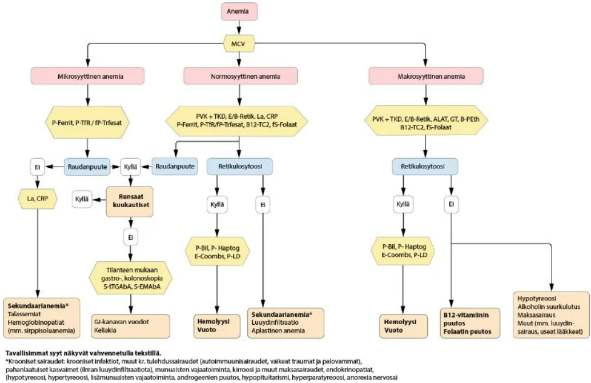
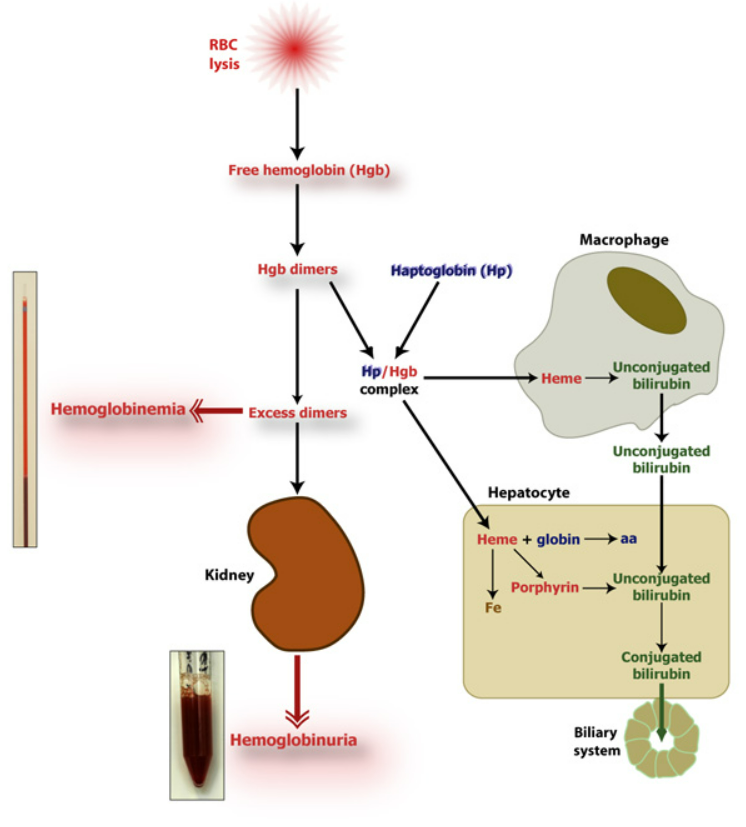
3.1.43 Mikä voi olla syynä siihen, että suun kautta otettu rautahoito ei korjaa anemiaa?
- Liiallinen lihansyönti dieetissä
- Lapamato
- Kilpirauhasen vajaatoiminta
- Hoitamaton helikobakteeri-infektio
dHelikobakteerin (H. pylori) aiheuttama mahalaukun limakalvon tulehduksen voi johtaa hapenpuutteeseen tai hapottomaan mahaan. Mahalaukun happamuus on välttämätöntä, jotta rauta muuttuu suolistossa imeytyvään muotoon. Lisäksi helikobakteeri voi itse käyttää elimistön rautaa kasvuunsa ja aiheuttaa mahalaukussa mikroskooppista verenvuotoa. Usein rauta-arvot lähtevät nousuun vasta, kun helikobakteeri on häädetty antibioottikuurilla.
Muita tyypillisiä syitä rautahoidon epäonnistumiselle ovat imeytymishäiriöt kuten keliakia, jatkuva piilevä verenvuoto tai se, että rauta otetaan yhdessä imeytymistä estävien aineiden, kuten maitotuotteiden tai kahvin, kanssa
a: Liha sisältää hemirautaa (ferrorautaa (Fe2+), joka on sitoutunut proteiineihin ja muodostanut hemikompleksin), joka imeytyy erittäin tehokkaasti ja jopa parantaa muista lähteistä saatavan raudan imeytymistä. Lihansyönti ei siis estä rautahoidon onnistumista, vaan pikemminkin tukee sitä.
b: Lapamato (Diphyllobothrium latum) voi kyllä aiheuttaa anemiaa, mutta kyseessä on yleensä B12-vitamiinin puutteesta johtuva makrosytäärinen anemia (megaloblastinen anemia), ei raudanpuuteanemia. Lapamato imee itseensä isännän B12-vitamiinia, mutta se ei estä suun kautta otetun raudan imeytymistä.
c: Hypotyreoosi voi hidastaa aineenvaihduntaa ja punasolujen tuotantoa, aiheuttaen usein lievää normosytääristä anemiaa, mutta se ei itsessään ole suora syy siihen, miksi suoliston kyky absorboida po-rautaa olisi estynyt3.1.44 Mikä seuraavista kuuluu trombosytopenian aiheuttajiin?
- Raudan puute
- Uusi lääke
- Sydäninfarkti
- Vatsahaava
bIatrogeeninen trombosytopenia on erittäin yleinen syy verihiutaleiden laskuun. Uusi lääke voi aiheuttaa trombosytopenian joko immunologisella mekanismilla (elimistö muodostaa vasta-aineita, jotka tuhoavat omat verihiutaleet lääkkeen läsnäollessa) tai jarruttamalla luuytimen tuotantoa. Tyypillisiä aiheuttajia ovat tietyt antibiootit (esim. trimetopriimi/sulfametoksatsoli), epilepsialääkkeet (esim. valproaatti), hepariini (HIT eli hepariinin indusoima trombosytopenia) sekä solunsalpaajat. Kun potilaalla todetaan uusi trombosytopenia, lääkelistan tarkistaminen on aina yksi ensimmäisistä ja tärkeimmistä toimenpiteistä.
a: Raudanpuute yleensä aiheuttaa reaktiivista trombosytoosia. Kun luuytimellä ei ole rautaa punasolujen tuottamiseen, erytropoieesia yritetään stimuloida lisäämällä erytropoietiinin eritystä, joka stimuloi sivutuotteena usein myös megakaryosyyttejä tuottamaan ylimääräisiä verihiutaleita verenkiertoon.
c: Verihiutaleet kyllä yleensä osallistuvat infarktin syntyyn (muodostamalla sepelvaltimon tukkivan verihyytymän eli trombin), mutta tämä paikallinen kulutus ei riitä laskemaan koko verenkierron verihiutalemäärää.
d: Peptinen ulkus aiheuttaa maha-suolikanavan verenvuotoa ja vuodon seurauksena kehittyy usein raudanpuuteanemia ja sitä kautta taas reaktiivinen trombosytoosi3.1.45 Essentiellin trombosytoosin diagnoosia vahvistaa
- Ph-kromosomin positiivisuus
- Korkea seerumin EPO-pitoisuus
- Luuytimen fibroosi
- JAK2-geenimutaatio
dKML poislukien myeloproliferatiiviset neoplasiat eli essentiaalinen trombosytemia (ET), polysytemia vera (PV) ja primaarinen myelofibroosi (PMF) ovat usein yhteydessä JAK2-mutaatioihin (janus kinaasi 2). V617F-pistemutaatio JAK2-geenissä johtaa myeloidien esiastesolujen kasvutekijäyliherkkyyteen -> myeloproliferaatio. Essentiellissä trombosytoosissa tämä liikakasvu on vahvinta megakaryosyyttien ja siten verihiutaleiden suuntaan.
Muita yleisiä mutaatioita ovat mm. CALR ja MPL.
a: Kroonisen myelooisen leukemian (KML) osoittamiseen tärkein merkki on yhdistelmägeenin BCR-ABL1 esiintyminen, joka johtuu translokaatiosta t(9;22); kromosomitutkimuksissa todetaan tyypillisesti Philadelphia-kromosomi. KML:n diagnoosi perustuu fuusiogeenin (BCR-ABL1) osoittamiseen verinäytteestä ja/tai Philadelphia-kromosomin (Ph) osoittamiseen luuydinnäytteestä.
b: Erytropoietiini (EPO) säätelee pääasiassa punasolujen tuotantoa. Essentiellissä trombosytoosissa EPO-taso on tyypillisesti täysin normaali tai hieman matala. Merkittävästi matalia EPO-arvoja nähdään toisessa myeloproliferatiivisessa sairaudessa, polysytemia verassa (PV). Korkea EPO-pitoisuus viittaisi puolestaan mm. elimistön hapenpuutteeseen tai EPO:a virheellisesti tuottavaan kasvaimeen (sekundaarinen erytrosytoosi).
c: Merkittävä luuytimen sidekudoistuminen on tunnusmerkillistä primaariselle myelofibroosille (PMF). Vaikka PMF voi esivaiheessaan muistuttaa ET:tä (niin sanottu prefibroottinen myelofibroosi), varsinaiseen essentielliin trombosytoosiin ei määritelmällisesti saa kuulua merkittävää luuydinfibroosia. ET:n luuydinnäytteessä nähdään tyypillisesti vain lisääntynyt määrä suurentuneita, kypsiä megakaryosyyttejä.
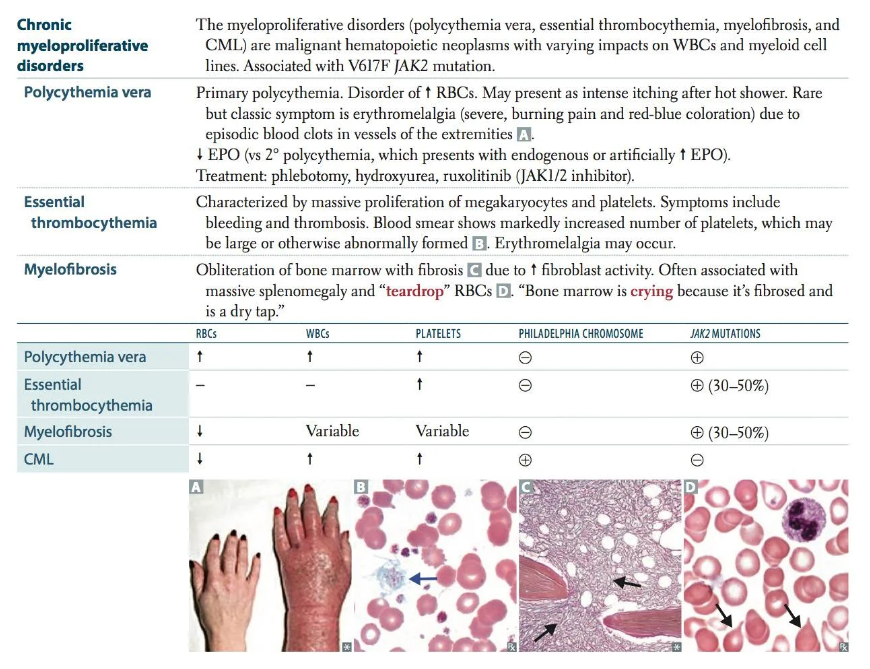
3.1.46 Hepariinin indusoimaa trombosytopeniaa luonnehtii
- Vaikeat verenvuodot
- Tromboositaipumus
- Ei liity toistettuihin hepariinihoitoihin
- Trombosyyttitaso veressä laskee vain vähän
bHepariinin (yleensä fraktioimattoman) indusoima trombosytopenia (HIT) tarkoittaa verihiutaleiden tuhoutumista, joka syntyy sekundaarisena hepariinihoidolle. HIT voidaan jakaa kahteen tyyppiin sen mekanismin mukaan: HIT 1 (ei-immunologinen) ja HIT 2 (immunologinen). HIT 1 on yleisempi ja väistyy itsestään parissa päivässä. Se johtuu hepariinin suorasta vaikutuksesta verihiutaleisiin.
Tyypin 2 HIT:ssa hepariini voi muodostaa kompleksin PF-4 (platelet factor 4) kanssa verihiutaleen pinnalla muodostaen hapteenin. Tietyt IgG-auto-vasta-aineet voivat tunnistaa tämän kompleksin, mikä johtaa verihiutaleen tuhoutumiseen pernassa. Tuhoutuneiden verihiutaleiden fragmentit aktivoivat muita verihiutaleita, mikä johtaa tromboosiin. Diagnostiikassa käytetään hepariinitrombosytopeniatutkimusta (B-HeparTP). Kun vahva epäily tilasta herää, tulee hepariinihoito tauottaa ja tarvittaessa vaihtaa muuhun antikoagulaatioon.
a: HIT:n ydinongelma on massiivinen hyytyminen ja laaja-alaiset tukokset. Vaikka verihiutaleiden määrä verenkierrossa laskee (koska ne kuluvat tukosten muodostamiseen ja niitä poistuu verenkierrosta), kliinisesti merkittävät verenvuodot ovat HIT-potilailla harvinaisia. Tukokset aiheuttavat mm. ihon nekroosia, jota kannattaa etsiä.
c: Tyypin 2 HIT on immunologinen reaktio ja toistuvat hepariinialtistukset nimenomaan lisäävät riskiä. Jos potilas on saanut hepariinia hiljattain (tyypillisesti alle 100 vuorokauden sisällä) ja hänelle on jo muodostunut valmiita vasta-aineita, uusi hepariinihoito voi laukaista niin sanotun pika-HIT:n jopa minuuttien tai tuntien kuluessa lääkkeen annosta
d: Kliinisesti vaarallisessa, immunologisessa tyypin II HIT:ssä trombosyyttien lasku on yleensä erittäin merkittävä. Tyypilliset diagnostiset kriteerit ovat, että verihiutalemäärä laskee yli 50 % potilaan omasta lähtöarvosta > 5 pv hepariinihoidon aloituksesta.
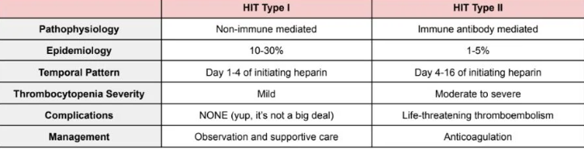
3.1.47 Polysytemia veran hoidon tärkein tavoite on
- Alentaa venesektioin Hb niin että potilas oirettomaksi
- Hoitaa lääkehoidoin potilas oireettomaksi
- Hoitaa lääkehoidoin trombosyytit normaaliksi
- Estää trombooseja
dPolysytemia veran (PV) vaarallisin ja yleisin komplikaatio – ja merkittävin kuolleisuutta aiheuttava tekijä – on valtimoiden ja laskimoiden tukostaipumus (tromboosi). Potilailla on huomattavasti kohonnut riski saada tromboosi mm. maskalaskimossa, porttilaskimossa, SLT, duran sinuksissa, raajojen verisuonissa (erytromelalgia) yms). Kaiken hoidon (venesektiot, asetyylisalisyylihappo eli ASA ja mahdollinen solunsalpaajalääkitys, kuten hydroksiurea) ensisijaisena tavoitteena on minimoida tämä tukosriski. Käytännössä tämä tehdään pitämällä veren hematokriitti alle tason 0.45.
Asianmukaisesti hoidettuna PV:n ennuste on hyvä (elinaika hieman verrokkiväestöä lyhyempi), mutta hoitamattomana keskimääräinen elinaika on vain n. 1.5v
a: Venesektioita eli veren poistoa kyllä käytetään hoidon kulmakivenä, mutta niiden tavoite ei ole pelkkä potilaan subjektiivinen oireettomuus. Potilas voi tuntea olonsa täysin oireettomaksi, vaikka hematokriitti olisi yli tavoiterajan. Kuitenkin tukosriski on silloin vaarallisen korkea. Hoidon tavoitteena ei ole pelkkä oireiden häviäminen, vaan myös tromboosien ehkäisy. Hoitoa ei myöskään seurata hemoglobiinilla, vaan hematokriitilla.
b: Polysytemia veraan liittyy usein hankalia oireita, kuten poikkeavaa väsymystä, yöhikoilua, pernan suurenemisesta johtuvaa vatsakipua sekä erityisesti veden kosketuksesta pahenevaa kutinaa (akvageeninen pruritus). Oireiden lievitys ja elämänlaadun parantaminen ovat tärkeitä tavoitteita, mutta ne ovat eloonjäämisennusteen kannalta toissijaisia verrattuna hengenvaarallisten tromboosien estämiseen.
c: Vaikka trombosyyttien (verihiutaleiden) määrä on PV:ssä usein koholla ja lääkityksellä (kuten hydroksiurealla) pyritään hallitsemaan koko luuytimen liikatoimintaa, pelkkä verihiutaleiden normalisointi on vain yksi keino päätavoitteen saavuttamiseksi. Verihiutaleiden määrä ei myöskään korreloi tukosriskiin yhtä voimakkaasti kuin korkea hematokriitti, eli niiden normalisointi ei ole hoidon ylin ohjenuora.3.1.48 Minkä kasvaimen ensioire voi olla erytrosytoosi? (polysytemia)
- Aivojen glioomian
- Keuhkokarsinooman
- Munuaiskarsinooman
- Haimakarsinooman
dYleisimmät aiheuttajat sekundaariselle erytrosytoosille ovat tupakointi ja krooniset keuhkosairaudet, koska nämä aiheuttavat heikkoa hapensaantia ja keho kompensoi lisäämällä hapenkantokykyä (EPO-tuotanto stimuloituu hypoksiassa) -> punasolujen tuotanto lisääntyy.
Myös mm. tietyt tuumorit, kuten munuaisten tai maksan tuumorit voivat aiheuttaa sekundaarista erytrosytoosia EPO:n liikatuotannon kautta. Suurin osa EPO:sta tuotetaan normaalisti munuaisten peritubulaarisoluissa -> munuaiskarsinooma on yleisin maligniteetti, joka aiheuttaa liiallista EPO:n tuotantoa.
3.1.49 Trombosyyttiluku yli 1500 altistaa enssentiellissä trombosytoosissa
- Leukemiakehitykselle
- Verenvuodoille
- Kutinalle
- Lääkeresistenssille
bKun trombosyyttitaso nousee erittäin korkeaksi (yleensä >1000-1500), potilaalle kehittyy usein hankitun von Willebrandin taudin kaltainen tila, kun suuri määrä verihiutaleita sitoo ja pilkkoo verestä von Willebrand -hyytymistekijää. Tämä johtaa vuotoalttiuteen.
a: ET ja muut myeloproliferatiiviset neoplasiat voivat edetä akuutiksi leukemiaksi, mutta korkea trombosyyttiluku itsessään ei ole sen suora laukaiseva tekijä
c: Kutinaa voi esiintyä myeloproliferatiivisissa sairauksissa (erityisesti polysytemia verassa), mutta se ei suoraan liity yli 1500:n trombosyyttilukuun. Tyypillisin kutinan laukaiseva tekijä on polysytemia verassa lämmin vesi (akvageeninen pruritus). Yleensä siis myös syöttösolut ovat lisääntyneet ja nämä vapauttavat histamiinia -> kutina.
d: Korkea luku kertoo taudin aktiivisuudesta, mutta ei itsessään tarkoita, että tila olisi resistentti esimerkiksi solunsalpaajille (kuten hydroksiurealle)3.1.50 Polysytemia veran potilaan odotettavissa oleva elinikä on
- Diagnoosista keskimäärin 5 v.
- Diagnoosista keskimäärin 10 v.
- Riippuvainen trombosytoosista
- Hoidettuna jokseenkin sama kuin verrokkiväestön
dAsianmukaisesti hoidettuna PV:n ennuste on hyvä (elinaika vain hieman verrokkiväestöä lyhyempi), mutta hoitamattomana keskimääräinen elinaika on vain n. 1.5v.
Hoitamattomana yleensä kuolinsyyksi muodostuu jokin tromboottinen tapahtuma, koska PV aiheuttaa merkittävää tukostaipumusta. Kaiken hoidon (venesektiot, asetyylisalisyylihappo eli ASA ja mahdollinen solunsalpaajalääkitys, kuten hydroksiurea) ensisijaisena tavoitteena on minimoida tämä tukosriski.
3.1.51 Mitä on ITP:lle tyypillistä?
- Aiheuttaa spontaaneja sisäelinvuotoja
- Potilaalla on toistuvia päänsärkykohtauksia
- Sääriin ilmaantuu petekkioita
- Ilmaantuu nivelturvotuksia
cITP (immunologinen trombosytopenia, immunologinen/idipaattinen trombosytopeninen purppura) on autoimmuunisairaus, joka ilmenee trombosytopeniana eli verihiutaleiden määrän vähäisyytenä ja vaihtelevan vahvuisena vuototaipumuksena.
ITP:ssä jostain syystä (usein esim. virusinfektion jälkeen; muita aiheuttajia ovat mm. antibiootit, KLL, HIV, HCV, SLE) pernan plasmasolut tuottavat IgG-vasta-aineita trombosyyttien antigeenejä (esim. GPIIb/IIIa) vastaan. Nämä vasta-aineet tarttuvat trombosyytteihin, mikä ohjaa pernan makrofagit tuhoamaan merkityt trombosyytit -> trombosytopenia.
ITP:ssä verihiutaleet laskevat alle määrän 100 xe9/l. ITP jaetaan trombosytopenian keston mukaan akuuttiin (alle kolme kuukautta), persistoivaan (3-12 kuukautta) ja krooniseen (yli 12 kuukautta) muotoon. ITP kroonistuu selvästi useammin aikuisilla kuin lapsilla (noin 10%:lla aikuispotilaista). Lapsilla ITP on tyypillisesti itsestään rajoittuva akuutti tautimuoto (alle 3kk, tyypillisesti pari viikkoa).
Yleisimmät oireet ovat väsymys ja vuotoriski. Vuotoriski on verihiutaletyyppimäinen eli havaitaan pinnallisempia verenvuotoja (petekkiat, purppurat, ekkymoosit).
Immunologisen trombosytopenian (ITP) hoidoksi yleensä riittää seuranta, kun trombosyyttimäärä on yli 30xE9/l. Hoidon suuntaviivat päättää hematologi tai sisätautilääkäri. Jos B-Trom on todella matala, käytetään yleensä ensisijaisesti deksametasonia 40 mg/vrk 4 vrk:n ajan. Vasteen saavuttamisen jälkeen annosta pienennetään mahdollisimman pieneksi; tavoitteena on yleensä B-Trom > 50 × 109/l ja vuoto-oireeton potilas; trombosyyttien normaalistuminen ei ole tarpeen, vaan riittävä taso määritellään yksilöllisesti. Mikäli ITP:n hoidossa glukokortikoidit ovat tehottomia tai vasteen ylläpitämiseksi joudutaan käyttämään jatkuvasti suuria annoksia, suositellaan toisen linjan hoitoja, joita ovat mm. trombopoietiinireseptoriagonistit (TPO-RA, verihiutalekasvutekijöitä), rituksimabi ja pernan poisto.
Mikäli ITP-potilas vuotaa, niin yleensä tulee antaa trombosyyttisiirto, jota ennen usein annetaan IVIG (iv-immunoglobuliinia) ja iv glukokortikoidia siirtovasteen parantamiseksi
a: Vuodot ovat yleensä pinnallisia, koska ne ovat trombosytopeniatyyppisiä; vrt. koagulaatiokaskadin häiriöiden syvempiin verenvuotoihin. Vakavat verenvuodot ovat harvinaisia, sillä trombosyyttien funktio on kuitenkin normaali.
b: Päänsärky ei ole ITP:n perusoire. Jos ITP-potilaalle tulee äkillinen, kova päänsärky, se on hälytysmerkki mahdollisesta aivoverenvuodosta, mutta toistuvat päänsärkykohtaukset eivät kuulu taudinkuvaan
d: Nivelvuodot ja niistä johtuvat nivelturvotukset (hemartroosi) ovat tyypillisiä hyytymistekijöiden puutostiloissa ja koagulaatiokaskadin häiriöissä. Verihiutalehäiriöissä, kuten ITP:ssä, nivelvuotoja ei tyypillisesti esiinny.